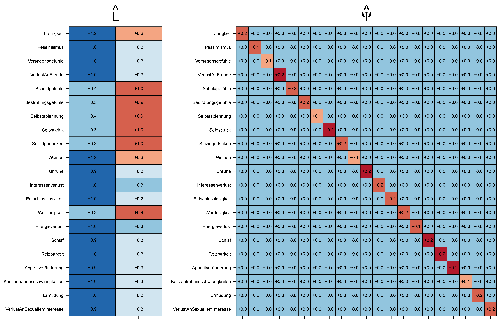
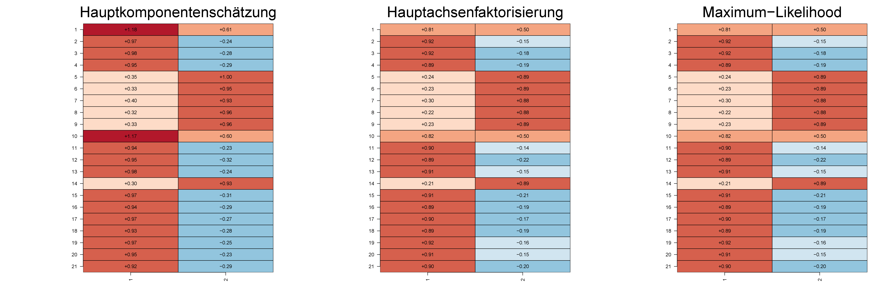

| 1 | 2 | 3 | 4 | 5 | 6 | 7 | 8 | 9 | 10 | 11 | 12 | |
|---|---|---|---|---|---|---|---|---|---|---|---|---|
| Traurigkeit | 4 | 3 | 0 | 2 | 2 | 4 | 2 | 0 | 3 | 4 | 1 | 3 |
| Pessimismus | 2 | 2 | 1 | 2 | 3 | 3 | 3 | 0 | 3 | 2 | 2 | 1 |
| Versagensgefühle | 2 | 2 | 0 | 2 | 3 | 3 | 3 | 0 | 2 | 2 | 2 | 1 |
| VerlustAnFreude | 2 | 2 | 1 | 2 | 3 | 3 | 3 | 0 | 2 | 2 | 2 | 1 |
| Schuldgefühle | 3 | 3 | 0 | 2 | 2 | 3 | 1 | 1 | 3 | 2 | 0 | 4 |
| Bestrafungsgefühle | 3 | 3 | 0 | 2 | 3 | 3 | 1 | 1 | 2 | 3 | 0 | 4 |
| Selbstablehnung | 3 | 3 | 0 | 2 | 2 | 3 | 1 | 1 | 2 | 3 | 1 | 4 |
| Selbstkritik | 3 | 3 | 0 | 2 | 3 | 4 | 2 | 1 | 2 | 3 | 0 | 3 |
| Suizidgedanken | 3 | 3 | 1 | 2 | 2 | 3 | 1 | 2 | 2 | 3 | 0 | 4 |
| Weinen | 3 | 3 | 0 | 2 | 3 | 4 | 2 | 0 | 3 | 3 | 1 | 2 |
| Unruhe | 2 | 2 | 0 | 2 | 3 | 3 | 3 | 0 | 2 | 2 | 3 | 2 |
| Interessenverlust | 2 | 2 | 1 | 2 | 3 | 4 | 3 | 0 | 3 | 2 | 2 | 1 |
| Entschlusslosigkeit | 3 | 2 | 1 | 2 | 3 | 4 | 3 | 0 | 2 | 2 | 2 | 1 |
| Wertlosigkeit | 4 | 3 | 1 | 2 | 2 | 3 | 1 | 2 | 2 | 2 | 0 | 4 |
| Energieverlust | 2 | 2 | 1 | 2 | 3 | 3 | 3 | 0 | 3 | 2 | 2 | 1 |
| Schlaf | 2 | 2 | 1 | 2 | 3 | 3 | 3 | 0 | 2 | 3 | 2 | 1 |
| Reizbarkeit | 2 | 2 | 2 | 2 | 3 | 3 | 3 | 0 | 2 | 2 | 3 | 1 |
| Appetitveränderung | 2 | 2 | 1 | 2 | 3 | 3 | 3 | 0 | 2 | 2 | 2 | 1 |
| Konzentrationsschwierigkeiten | 2 | 2 | 1 | 2 | 3 | 3 | 3 | 0 | 2 | 2 | 2 | 1 |
| Ermüdung | 3 | 2 | 1 | 2 | 3 | 3 | 3 | 0 | 2 | 2 | 3 | 1 |
| VerlustSexuellenInteresses | 3 | 2 | 1 | 2 | 3 | 3 | 3 | 0 | 2 | 2 | 2 | 1 |
52 Faktorenanalyse
Mit dem Begriff Faktorenanalyse werden verschiedene Inferenzverfahren bezeichnet, bei denen den zugrundeliegenden Modellen gemeinsam ist, dass sie mithilfe linear-affiner Transformationen nicht-beobachtbarer Zufallsvektoren die Kovarianzstruktur eines beobachtbaren Zufallsvektors generieren. Dabei sind in der psychologischen Anwendung Realisierungen des beobachtbaren Zufallsvektors typischerweise die Itemwerte einer Gruppe von Proband:innen in einem psychologischen Test. Ziel einer Faktorenanalyse ist es dann, die geschätzte Item \(\times\) Item Kovarianzmatrix mithilfe eines Faktorenanalysemodells mit möglichst einfacher Struktur zu erklären. Stilprägend sind in dieser Hinsicht die Arbeit von Spearman (1904), in der versucht wird, die Kovarianzstruktur verschiedener Leistungstestwerte mithilfe eines generellen Intelligenzfaktors zu erklären und Arbeiten zur Analyse des 16PF-Fragebogens (Cattell (1957)) im Sinne der Big Five Faktoren der Persönlichkeit. Im Kontext der Fragebogenentwicklung hat es sich eingebürgert, reproduzierbare Ergebnisse von Faktorenanalysen als Ausdruck der faktoriellen Validität eines Fragebogens zu interpretieren.
Anwendungsbeispiel
Wir betrachten einen simulierten Datensatz nach den Ergebnissen einer Studie zur faktoriellen Validität der deutschen Version des BDI-II (Hautzinger et al. (2006), Keller et al. (2008)). Keller et al. (2008) betrachten dabei eine Stichprobe von \(n = 266\) depressiven Patient:innen, die zum Zeitpunkt der Bearbeitung des BDI-II die Kriterien einer depressiven Störung nach ICD-10/DSM-IV erfüllten. Untenstehende Tabelle zeigt die BDI-II-Item-Scores der ersten 12 Patient:innen des simulierten Datensatzes, Abbildung 52.1 zeigt den gesamten Datensatz als kolorierte Datensatzmatrix. Abbildung 52.2 zeigt die Item \(\times\) Item Kovarianz- und Korrelationsmatrizen des Datensatzes, die die primären Explananda einer faktoranalytischen Modellierung bilden.


52.1 Faktorenanalysemodelle
Wir beginnen mit folgender Definition.
Definition 52.1 (Faktorenanalysemodelle in struktureller Form) Es sei \[ y = Lf + \varepsilon \tag{52.1}\] wobei für \(m > k\)
- \(y\) ein \(m\)-dimensionaler beobachtbarer Zufallsvektor ist, der Daten genannt wird, ist,
- \(L = (l_{ij})\in \mathbb{R}^{m \times k}\) eine Matrix ist, die Faktorladungsmatrix genannt wird,
- \(f\) ein \(k\)-dimensionaler nicht-beobachtbarer Zufallsvektor ist, dessen Komponenten Faktoren genannt werden und für den gilt, dass \[\begin{equation} \mathbb{E}(f)=0_k \mbox{ und }\mathbb{C}(f) = I_k, \end{equation}\]
- \(\varepsilon\) ein \(m\)-dimensionaler nicht-beobachtbarer und von \(f\) unabhängiger Zufallsvektor ist, der Beobachtungsfehler genannt wird und für den gilt, dass \[\begin{equation} \mathbb{E}(\varepsilon) = 0_m \mbox{ und } \mathbb{C}(\varepsilon) = \mbox{diag}\left(\psi_1,..., \psi_m\right) =: \Psi \mbox{ mit } \psi_i > 0 \mbox{ für } i = 1,...,m. \end{equation}\]
Dann heißt Gleichung 52.1 Faktorenanalysemodell in struktureller Form. Gilt darüber hinaus, dass
- \(f \sim N(0_k,\Phi)\) mit \(\Phi \in \mathbb{R}^{k \times k}\) p.d. und
- \(\varepsilon \sim N(0_m, \Psi)\) mit \(\Psi := \mbox{diag}\left(\psi_1,...,\psi_m\right)\) für \(\psi_i > 0\) und \(i = 1,...,m\),
dann heißt Gleichung 52.1 Normalverteilungsmodell der Faktorenanalyse in struktureller Form.
Die von den Komponenten des Datenvektors \(y\) modellierten Daten beziehen sich in der Analyse von psychologischen Testdaten in der Regel auf die Itemscores eines Tests. Die von den Komponenten des Vektors \(f\) modellierten Faktoren werden manchmal auch gemeinsame Faktoren (common factors) genannt und gegenüber den Komponenten des Zufallsvektors \(\varepsilon\) abgegrenzt, die als spezifische Faktoren (unique factors) bezeichnet werden. Gemäß des Matrixproduktes \(Lf\) in \(\eqref{eq:fam}\) wird der Eintrag \(l_{ij}\) für \(i = 1,...,m, j = 1,...,k\) der Faktorladungsmatrix \(L\) für \(i = 1,...,m\) und \(j = 1,...,k\) die Faktorladung des \(j\)ten Faktors auf die \(i\)te Datenkomponente genannt. Wir schreiben das Faktorenanalysemodell in der Folge meist in der Kurzform \[\begin{equation} y = Lf + \varepsilon \mbox{ mit } f \sim (0_k,I_k) \mbox{ und } \varepsilon \sim (0_m,\Psi) \end{equation}\] Dabei soll die Notation \(\zeta \sim (\mu,\Sigma)\) ausdrücken, dass \(\mathbb{E}(\zeta)=\mu\) und \(\mathbb{C}(\zeta)=\Sigma\) sind und \(f\) und \(\varepsilon\) sollen unabhängige Zufallsvektoren sein.
Verteilungsform des Faktorenanalysemodells
In Verteilungsform kann das Faktorenanalysemodell äquivalent geschrieben werden als \[\begin{equation} \mathbb{P}(f,y) = \mathbb{P}(f)\mathbb{P}(y|f) \mbox{ mit } f \sim (0_k,I_k) \mbox{ und } y\,|\,f \sim (Lf,\Psi). \end{equation}\] Dabei erschließt sich die Bedingtheit der Verteilung von \(y\) auf \(f\) aus datengenerativer Sicht wie folgt: Es wird zunächst ein Wert von \(f\) anhand von \(\mathbb{P}(f)\) realisiert, dieser Wert wird dann durch \(L\) transformiert und bildet den Erwartungswert der bedingten Verteilung \(\mathbb{P}(y|f)\) von \(y\) gegeben \(f\). Dann wird ein Wert von \(\varepsilon\) realisiert und schließlich werden die Werte von \(Lf\) und \(\varepsilon\) zu einem Wert von \(y\) addiert. Entsprechend gilt für das Normalverteilungsmodell der Faktorenanalyse die Wahrscheinlichkeitsdichte \[\begin{equation} p(f,y) = p(f)p(y|f) \mbox{ mit } p(f) = N(0_k,\Phi) \mbox{ und } p(y|f) = N(Lf,\Psi). \end{equation}\]
Datensatzmodell der Faktorenanalyse
Im datenanalytischen Kontext betrachtet man die vorliegenden Itemscores einer Proband:in \(j\), die einen psychologischen Fragebogen oder Test bearbeitet hat, als Realisierung eines Proband:innen-spezifischen und anhand der Verteilung des Faktorenanalysemodells verteilten Zufallsvektors \(y_j\). Gleichzeitig unterstellt man, dass diesem Zufallsvektor eine Realisierung des nicht-beobachtbaren Zufallsvektors \(f_j\), also der proband:innenspezifischen Faktorwerte, entspricht. Weiterhin nimmt man an, dass die Realisierungen von beobachtbaren Zufallsvektoren \(y_1,...,y_n\) und ihren entsprechenden nicht-beobachtbaren Zufallsvektoren \(f_1,...,f_n\) über Proband:innen unabhängig und identisch nach einem zugrundeliegenden proband:innenübergreifenden Faktorenanalysemodell verteilt sind. Formal drückt man dies entweder als Faktorisierung der gemeinsamen Verteilung der beobachtbaren und nicht-beobachtbaren Zufallsvektoren in der Form \[\begin{equation} \mathbb{P}(f_1,y_1,...,f_n,y_n) = \prod_{j=1}^n \mathbb{P}(f_j,y_j) \mbox{ mit } \mathbb{P}(f_j,y_j) = \mathbb{P}(f_k,y_k) \mbox{ für } 1 \le j,k \le n \end{equation}\] oder im Sinne unabhängig und identisch verteilter Zufallsvektoren in der Form \[\begin{equation} (f_1,y_1), ..., (f_n,y_n) \sim \mathbb{P}(f,y) \end{equation}\] aus. Entscheidend ist, dass man bei entsprechendem Vorliegen einer Datenmatrix \(Y \in \mathbb{R}^{m \times n}\) wie in Abbildung 52.1 gezeigt, unterstellt, dass zu jedem Spalteneintrag ein virtueller, nicht-beobachteter, proband:innenspezifischer, Faktorenvektorwert korrespondiert. Inferenz bezüglich proband:innenspezifischer Faktorwerte, also die Modellschätzer-basierte Angabe der wahrscheinlichsten Werte des proband:innenspezifischen Faktorvektors, wird im Kontext der Faktorenanalyse als Evaluation von Factorscores bezeichnet, steht in der Anwendung allerdings meist nicht im Vordergrund.
Beispiel (1) Spearmans g-Faktor Modell
Grundlage von Spearman’s Intelligenzmodell ist die Korrelationsstruktur von Leistungswerten in \(m = 6\) Themenbereichen (Classics, French, English, Mathematics, Pitch discrimination, Musical talent) in einer Stichprobe von ungefähr 30 Kindern im Alter von 9 und 13 Jahren (Yanai & Ichikawa (2007)). Spearman (1904) erklärt die entsprechenden Leistungswerte \(y_i\) mithilfe eines Faktorenanalysemodells der Form \[\begin{equation} \begin{pmatrix} y_1 \\ y_2 \\ y_3 \\ y_4 \\ y_5 \\ y_6 \\ \end{pmatrix} = \begin{pmatrix} l_1 \\ l_2 \\ l_3 \\ l_4 \\ l_5 \\ l_6 \\ \end{pmatrix} f + \begin{pmatrix} \varepsilon_1 \\ \varepsilon_2 \\ \varepsilon_3 \\ \varepsilon_4 \\ \varepsilon_5 \\ \varepsilon_6 \\ \end{pmatrix} \Leftrightarrow y_i = l_if + \varepsilon_i \mbox{ für } i = 1,...,6. \end{equation}\] Dabei bezeichnet die latente Zufallsvariable \(f\) den Allgemeinen Faktor der Intelligenz und wird traditionell als g-Faktor bezeichnet. Für die Faktorladungen \(l_i, i = 1,...,6\) fordert Spearman (1904) \(|l_i| < 1\). Die Komponenten \(\varepsilon_i\) werden im Kontext von Spearman (1904) als Themenbereichs-spezifische Faktoren bezeichnet. Entsprechend wird auch oft von Spearman’s Zweifaktoren Modell gesprochen, wobei es im Sinne der modernen Faktorenanalyse allerdings nur einen Faktor und einen Vektor von Zufallsfehlern in diesem Modell gibt.
Beispiel (2) Thurstones’ Multifaktorenmodell
Thurstone (1947) schlägt mit dem Multifaktorenmodell ein generelles Modell von \(k\) Faktoren vor, um die Kovarianzstruktur eines \(m\)-dimensionalen Zufallsvektors, der \(m\) Leistungstestwerte einer Gruppe von Proband:innen modelliert, zu erklären. Dabei soll \(k < m\) gelten. In struktureller Form hat dieses Modell die Form \[\begin{equation} y_i = l_{i1}f_1 + l_{i2}f_2 + \cdots + l_{ik}f_k + \varepsilon_i \mbox{ für } i = 1,...,m \end{equation}\] und entspricht damit der allgemeinen Form eines Faktorenanalysemodells, wobei hier die Faktoren \(f_1,...,f_k\) als gemeinsame Faktoren (common factors) und die Zufallsfehler \(\varepsilon_1,...,\varepsilon_m\) als spezifische Faktoren (unique factors) bezeichnet werden. In Thurstone (1936) beispielsweise wird versucht zu zeigen, dass zur Erklärung der beobachteten Kovarianzstruktur von Leistungstestdaten von 240 Proband:innen sieben Faktoren (Memory, Word fluency, Verbal relation, Number, Perceptual Speed, Visualization, Reasoning), benötigt werden.
Beispiel (3) Das Modell paralleler Testmessungen
\(y_1,...,y_m\) seien die beobachtbaren Itemwerte eines psychologischen Tests und sei das Modell paralleler Testmessungen für den wahren Wert \(\tau\) in der Form \[\begin{equation} y_i = \tau + \varepsilon_i \mbox{ für } i = 1,...,m \end{equation}\] mit Messfehler \(\varepsilon_i\). Dann entspricht dieses Modell dem Faktorenanalysemodell \[\begin{equation} \begin{pmatrix} y_1 \\ y_2 \\ \vdots \\ y_m \end{pmatrix} = \begin{pmatrix} 1 \\ 1 \\ \vdots \\ 1 \end{pmatrix} \tau + \begin{pmatrix} \varepsilon_1 \\ \varepsilon_2 \\ \vdots \\ \varepsilon_m \end{pmatrix} \end{equation}\] Insbesondere entspricht der Faktor \(f\) hier also dem wahren Wert \(\tau\) und die Faktorladungsmatrix hat die als bekannt vorausgesetzte Form \(L := 1_m\).
Die zentrale Eigenschaft des Faktorenanalysemodells ist die Beschaffenheit seiner marginalen Datenkovarianzmatrix, die wir im folgenden Theorem festhalten.
Theorem 52.1 (Marginale Datenkovarianzmatrix des Faktorenanalysemodells) Gegeben sei ein Faktorenanalysemodell \[\begin{equation} y = Lf + \varepsilon \mbox{ mit } f \sim (0_k,I_k) \mbox{ und } \varepsilon \sim (0_m,\Psi). \end{equation}\] Dann gilt für die marginale Kovarianzmatrix des Datenvektors \[\begin{equation} \mathbb{C}(y) = LL^T + \Psi. \end{equation}\]
Beweis. Mit Theorem 25.10 gilt aufgrund der Unabhängigkeit von \(f\) und \(\varepsilon\) \[\begin{equation} \mathbb{C}(y) = L\mathbb{C}(f)L^T + \mathbb{C}(\varepsilon) = LI_kL^T + \Psi = LL^T + \Psi. \end{equation}\]
Die Diagonaleinträge der marginalen Datenkovarianzmatrix des Faktorenanalysemodells lassen sich additiv durch die Einträge der Faktorladungsmatrix und der Kovarianzmatrix des Beobachtungsfehlers darstellen. Dies ist der Inhalt folgenden Theorems.
Theorem 52.2 (Varianzzerlegung der faktoranalytischen Datenkomponenten) Gegeben sei ein Faktorenanalysemodell \[\begin{equation} y = Lf + \varepsilon \mbox{ mit } f \sim (0_k,I_k) \mbox{ und } \varepsilon \sim (0_m,\Psi). \end{equation}\] Dann ist für \(i = 1,...,m\) die Varianz der \(i\)ten Komponente von \(y\) gegeben durch \[\begin{equation} \mathbb{V}(y_i) = \sum_{j=1}^k l_{ij}^2 + \psi_i. \end{equation}\]
Beweis. Mit Theorem 52.1 gilt \[\begin{align} \begin{split} \mathbb{C}(y) & = LL^T + \Psi \\ & = \begin{pmatrix} l_{11} & \cdots & l_{1k} \\ l_{21} & \cdots & l_{2k} \\ \vdots & \ddots & \vdots \\ l_{m1} & \cdots & l_{mk} \\ \end{pmatrix} \begin{pmatrix} l_{11} & \cdots & l_{m1} \\ l_{12} & \cdots & l_{m2} \\ \vdots & \ddots & \vdots \\ l_{1k} & \cdots & l_{mk} \\ \end{pmatrix} + \begin{pmatrix} \psi_1 & 0 & \cdots & 0 \\ 0 & \psi_2 & \cdots & 0 \\ \vdots & \vdots & \ddots & \vdots \\ 0 & \cdots & \cdots & \psi_m \\ \end{pmatrix} \\ & = \begin{pmatrix} \sum_{j=1}^k l_{1j}l_{1j} & \sum_{j=1}^k l_{1j}l_{2j} & \cdots & \sum_{j=1}^k l_{1j}l_{mj} \\ \sum_{j=1}^k l_{2j}l_{1j} & \sum_{j=1}^k l_{2j}l_{2j} & \cdots & \sum_{j=1}^k l_{2j}l_{mj} \\ \vdots & \cdots & \ddots & \vdots \\ \sum_{j=1}^k l_{mj}l_{1j} & \sum_{j=1}^k l_{mj}l_{2j} & \cdots & \sum_{j=1}^k l_{mj}l_{mj} \\ \end{pmatrix} + \begin{pmatrix} \psi_1 & 0 & \cdots & 0 \\ 0 & \psi_2 & \cdots & 0 \\ \vdots & \vdots & \ddots & \vdots \\ 0 & \cdots & \cdots & \psi_m \\ \end{pmatrix} \\ & = \begin{pmatrix} \sum_{j=1}^k l_{1j}^2 + \psi_1 & \sum_{j=1}^k l_{1j}l_{2j} & \cdots & \sum_{j=1}^k l_{1j}l_{mj} \\ \sum_{j=1}^k l_{2j}l_{1j} & \sum_{j=1}^k l_{2j}^2 + \psi_2 & \cdots & \sum_{j=1}^k l_{2j}l_{mj} \\ \vdots & \cdots & \ddots & \vdots \\ \sum_{j=1}^k l_{mj}l_{1j} & \sum_{j=1}^k l_{mj}l_{2j} & \cdots & \sum_{j=1}^k l_{mj}^2 + \psi_m \\ \end{pmatrix}. \end{split} \end{align}\] Für den \(i\)ten Diagonaleintrag von \(\mathbb{C}(y)\) aber gilt dann bekanntlich \(\mathbb{C}(y_i,y_i) = \mathbb{V}(y_i)\).
Die Terme in der Varianzdarstellung der faktoranalytischen Datenkomponenten von Theorem 52.2 erhalten im Kontext der Faktorenanalyse spezielle Bezeichnungen.
Definition 52.2 (Kommunalität und Spezifität) Gegeben sei ein Faktorenanalysemodell \[\begin{equation} y = Lf + \varepsilon \mbox{ mit } f \sim (0_k,I_k) \mbox{ und } \varepsilon \sim (0_m,\Psi). \end{equation}\] Dann werden in \[\begin{equation} \mathbb{V}(y_i) = \sum_{j=1}^k l_{ij}^2 + \psi_i \end{equation}\]
- \(h_i^2 := \sum_{j=1}^k l_{ij}^2\) die Kommunalität von \(y_i\)
- \(\psi_i\) die Spezifität von \(y_i\)
genannt.
Die Kommunalität einer Datenkomponente \(y_i\) ist also der Varianzanteil von \(y_i\), der durch die Faktorladungen erklärt wird. Die Spezifität einer Datenkomponente \(y_i\) dagegen ist der Varianzanteil von \(y_i\), der nicht durch die Faktorladungen erklärt wird und damit spezifisch für diese Datenkomponente ist. Mnemonisch gilt für jede Datenkomponente eines Faktorenanalysemodells also \[\begin{equation} \mbox{ Varianz } = \mbox{ Kommunalität } + \mbox{ Spezifität}. \end{equation}\]
Auch die Summe der Varianzen der Datenkomponenten eines Faktorenanalysemodells erhält eine eigene Bezeichnung.
Definition 52.3 (Gesamtvarianz) Gegeben sei ein Faktorenanalysemodell \[\begin{equation} y = Lf + \varepsilon \mbox{ mit } f \sim (0_k,I_k) \mbox{ und } \varepsilon \sim (0_m,\Psi). \end{equation}\] Dann wird \[\begin{equation} \mathbb{G} := \sum_{i=1}^m \mathbb{V}(y_i) = \sum_{i=1}^m \sum_{j=1}^k l_{ij}^2 + \sum_{i=1}^m \psi_i \end{equation}\] die Gesamtvarianz von \(y\) genannt.
Die Gesamtvarianz des beobachtbaren Datenvektors ist also definiert als die Summe der Varianzen der Datenkomponenten und entspricht damit der Spur der marginalen Datenkovarianzmatrix. Für die Gesamtvarianz gilt mnemonisch also \[\begin{equation} \mbox{ Gesamtvarianz } = \mbox{ Summe der Kommunalitäten } + \mbox{ Summe der Spezifitäten. } \end{equation}\] Wie wir später sehen werden kann die entsprechende Zerlegung der Gesamtstichprobenvarianz als Grundlage zur Evaluation der Modellgüte einer Faktorenanalyse dienen.
Nichtidentifizierbarkeit
Eine fundamentale Eigenschaft des Faktorenanalysemodells ist seine Nichtidentifizierbarkeit. Damit wird ausgedrückt, dass verschiedene Kombinationen von Faktorwerten und Faktorladungsmatrizen in der gleichen marginale Datenkovarianzmatrix resultieren und somit anhand einer Datenkovarianzmatrix bzw. ihrem Stichprobenäquivalent nicht eindeutig identizifiert werden können. Um diese Eigenschaft formal zu beschreiben, definieren wir zunächst den Begriff der orthogonalen Transformation eines Faktorenanalysemodells
Definition 52.4 (Orthogonale Transformation eines Faktorenanalysemodells) Gegeben sei ein Faktorenanalysemodell \[\begin{equation} y = Lf + \varepsilon \mbox{ mit } f \sim (0_k,I_k) \mbox{ und } \varepsilon \sim (0_m,\Psi) \end{equation}\] und es sei \(Q \in \mathbb{R}^{k \times k}\) eine orthogonale Matrix. Dann nennen wir \[\begin{equation} \tilde{y} = \tilde{L}\tilde{f} + \varepsilon \mbox{ mit } \tilde{L} := LQ \mbox{ und } \tilde{f} := Q^Tf \end{equation}\] eine orthogonale Transformation des Faktorenanalysemodells.
Die orthogonale Transformation eines Faktorenanalysemodells lässt den Datenvektor und seine Kovarianzmatrix unberührt. Dies ist die Aussage folgenden Theorems.
Theorem 52.3 (Nichtidentifizierbarkeit und Kovarianzinvarianz der Faktorenanalyse) Gegeben sei ein Faktorenanalysemodell \[\begin{equation} y = Lf + \varepsilon \mbox{ mit } f \sim (0_k,I_k) \mbox{ und } \varepsilon \sim (0_m,\Psi) \end{equation}\] sowie eine seiner orthogonalen Transformationen \[\begin{equation} \tilde{y} = \tilde{L}\tilde{f} + \varepsilon \mbox{ mit } \tilde{L} := LQ \mbox{ und } \tilde{f} := Q^Tf \end{equation}\] für eine orthogonale Matrix \(Q \in \mathbb{R}^{k \times k}\). Dann gelten \[\begin{equation} y = \tilde{y} \mbox{ und } \mathbb{C}(\tilde{y}) = \mathbb{C}(y) \end{equation}\]
Beweis. Zum einen gilt \[\begin{equation} \tilde{y} = \tilde{L}\tilde{f} + \varepsilon = LQQ^Tf + \varepsilon = LI_k f + \varepsilon = Lf + \varepsilon = y. \end{equation}\] Es gilt zum anderen \[\begin{equation} \mathbb{C}(\tilde{y}) = LQ(LQ)^T + \Psi = LQQ^TL^T + \Psi = LI_kL^T + \Psi = LL^T + \Psi = \mathbb{C}(y). \end{equation}\]
Mit \[\begin{equation} y = Lf + \varepsilon = \tilde{L}\tilde{f} + \varepsilon \end{equation}\] folgt also unmittelbar, dass für einen festen Wert von \(y\) die Faktorladungsmatrix \(L\) und der Faktorvektorwert von \(f\) nicht eindeutig bestimmt sind. Verschiedene Faktorladungsmatrizen und Faktorwerte können also die gleichen Daten erklären und aus einer gegebenen Stichprobenkovarianzmatrix kann nicht eindeutig auf \(L\) und \(f\) geschlossen werden. Weiterhin folgt mit \[\begin{equation} \mathbb{C}({y}) = LL^T + \Psi = \tilde{L}\tilde{L}^T + \Psi \end{equation}\] aber auch, dass sich die Gesamtvarianz und die Kommunalitäten bei orthogonaler Transformation nicht ändern. Fundamental ist die Nichtidentifizierbarkeit des Faktorenanalysemodells dadurch bedingt, dass nach Annahme weder die Faktorladungsmatrix, noch die Werte der Faktoren, noch die Beobachtungsfehler bekannt sind und Daten daher durch das Zusammenspiel dreier unbekannter Entitäten generiert werden.
Identifizierbarkeitsbedingungen
Zumindest im Kontext des Normalverteilungsmodells der Faktorenanalyse kann man versuchen, die Identifizierbarkeit der Parameter dieses Modells durch eine Reihe von Nebenbedingungen zu gewährleisten. Allerdings sind auch in diesem Modell allgemeine hinreichende und notwendige Bedingungen für die Modellidentifizierbarkeit nicht vollumfänglich bekannt, die Modellidentifizierbarkeit im Bereich der Faktorenanalyse und dem eng verwandten Feld der Strukturgleichungsmodelle bleibt also ein aktives Forschungsfeld (vgl. Hyvärinen et al. (2024)). In der Anwendung sind deshalb simulationsbasierte Parameter-Recovery-Studien sicherlich eine gute Forschungspraxis. In diesem Abschnitt wollen wir die Identifizierbarkeit des Normalverteilungsmodells der Faktorenanalyse genauer betrachten. Dazu definieren wir zunächst den Begriff der Identifizierbarkeit für das Normalverteilungsmodell der Faktorenanalyse und führen dann mit der Ordnungsbedingung eine häufig verwendete Heuristik zur Modellidentifizierbarkeit ein, die die Intuition formalisiert, dass ein Modell im Sinne der datenanalytischen Datenreduktion nicht mehr Parameter haben sollte als Datenstatistiken betrachtet werden. Dazu zählen wir zunächst die Anzahl der unikalen Parameter und der Statistiken des Normalverteilungsmodells der Faktorenanalyse.
Definition 52.5 (Identifizierbares Normalverteilungsmodell der Faktorenanalyse) Gegeben sei ein Normalverteilungsmodell der Faktorenanalyse \[\begin{equation} y = Lf + \varepsilon \mbox{ mit } f \sim N(0_k,\Phi) \mbox{ und } \varepsilon \sim N(0_m,\Psi). \end{equation}\] Weiterhin sei der Parametervektor dieses Modells definiert als die spaltenweise Konkatenation der Parametermatrizen \(L,\Phi,\Psi\), also \[\begin{equation} \theta := \mbox{vec}(L,\Phi,\Psi), \end{equation}\] so dass die marginale Datenkovarianz geschrieben werden kann als \[\begin{equation} \Sigma_\theta := L\Phi L^T + \Psi. \end{equation}\] Dann heißen das Normalverteilungsmodell der Faktorenanalyse und der Parametervektor \(\theta\) identifizierbar, wenn für alle \(\theta_1,\theta_2 \in \Theta\) gilt, dass \[\begin{equation} \Sigma_{\theta_1} = \Sigma_{\theta_2} \Leftrightarrow \theta_1 = \theta_2. \end{equation}\] Wenn für \(\theta_1 \neq \theta_2\) gilt, dass \(\Sigma_{\theta_1} = \Sigma_{\theta_2}\), so heißen das Modell und \(\theta\) nicht identifizierbar.
Bei nicht identifizierbaren Modellen ergeben unterschiedliche Parameterwerte also die gleiche Datenverteilung und es kann folglich aus Daten nicht eindeutig auf Parameterwerte zurückgeschlossen werden. Allerdings gibt es bisher keine allgemein gültigen notwendigen und hinreichenden Bedingungen für die Identifizierbarkeit von Normalverteilungsmodellen der Faktorenanalyse. Die unten vorgestellte Ordnungsbedingung ist lediglich eine notwendige Bedingung für die Identifizierbarkeit. Um sie diskutieren zu können, zählen wir zunächst die Anzahl an einzelnen (unikalen) skalaren Parametern und Stichprobenstatistiken eines Normalverteilungsmodells der Faktorenanalyse. Dabei ist zentral, dass die Symmetrie von Kovarianzmatrizen bedeutet, dass nur die Einträge über und inklusive ihrer Hauptdiagonale unikal sind.
Theorem 52.4 (Anzahl unikaler skalarer Parameter und Statistiken) Gegeben sei ein Normalverteilungsmodell der Faktorenanalyse \[\begin{equation} y = Lf + \varepsilon \mbox{ mit } f \sim N(0_k,\Phi) \mbox{ und } \varepsilon \sim N(0_m,\Psi). \end{equation}\] ein konfirmatorisches Faktorenanalysemodell. Dann gilt für die Anzahl an unikalen skalaren Parametern des Modells \[\begin{equation} n_\theta = mk + \frac{k(k+1)}{2} + m \end{equation}\] Weiterhin sei \(C\) sei die Stichprobenkovarianzmatrix eines Datensatzes von \(n\) unabhängigen Beobachtungen von \(y\). Dann gilt für die Anzahl an unikalen skalaren Stichprobenstatistiken des Normalverteilungsmodells der Faktorenanalyse \[\begin{equation} n_c = \frac{m(m+1)}{2}. \end{equation}\]
Beweis. Die Anzahl der Einträge der Faktorladungsmatrix \(L \in \mathbb{R}^{m \times k}\) ist \(mk\).
Die Anzahl der Einträge einer symmetrischen Matrix \(S \in \mathbb{R}^{k \times k}\) ist \(k^2\). Aufgrund der Symmetrie von \(S\) sind dabei allerdings nur die \(k\) Einträge der Hauptdiagonale und die Einträge oberhalb (oder unterhalb) der Hauptdiagonalen unikal. Die Anzahl der Einträge oberhalb (oder unterhalb) der Hauptdiagonalen ist die Hälfte aller \(k^2-k\) nicht-diagonalen Einträge von \(S\), also \((k^2 - k)/2\). Zusammen mit den Einträgen auf der Hauptdiagonalen ergibt sich damit für die Anzahl unikaler Einträge einer symmetrischen Matrix \[\begin{equation} \frac{k^2 - k}{2} + k = \frac{k^2 - k}{2} + \frac{2k}{2} = \frac{k^2 + k}{2} = \frac{k(k + 1)}{2}. \end{equation}\] Als Kovarianzmatrix ist \(\Phi \in \mathbb{R}^{k \times k}\) symmetrisch und hat damit \(\frac{k(k + 1)}{2}\) unikale Einträge. Die Anzahl der von Null verschiedenen Einträge von \(\Psi \in \mathbb{R}^{m \times m}\) ist \(m\).
Für die Anzahl an unikalen skalaren Parametern des Normalverteilungsmodells der Faktorenanalyse ergibt sich also zusammenfassend \[\begin{equation} n_\theta = mk + \frac{k(k+1)}{2} + m. \end{equation}\] Die Stichprobenkovarianzmatrix \(C\in \mathbb{R}^{m \times m}\) eines Datensatzes ist symmetrisch. Mit obigen Überlegungen zu den unikalen Einträgen einer symmetrischen Matrix ergibt sich also direkt \[\begin{equation} n_c = \frac{m(m+1)}{2}. \end{equation}\]
Nach Theorem 52.4 bezeichnet \(n_\theta\) also die Dimension des unikalen Parametervektors \(\theta\), es gilt also \(\theta \in \mathbb{R}^{n_\theta}\) und \(n_c\) ist die Anzahl der unikalen skalaren Einträge von \(C\). Das Verhältnis von \(n_\theta\) und \(n_c\) ist die Grundlage der Ordnungsbedingung zur Identifizierbarkeit von Normalverteilungsmodellen der Faktorenanalyse.
Definition 52.6 (Ordnungsbedingung) Gegeben sei ein Normalverteilungsmodell der Faktorenanalyse \[\begin{equation} y = Lf + \varepsilon \mbox{ mit } f \sim N(0_k,\Phi) \mbox{ und } \varepsilon \sim N(0_m,\Psi) \end{equation}\] Dann sagt man, dass das Modell der Ordnungsbedingung genügt, wenn für die Anzahl \(n_\theta\) der unikalen skalaren Parameter und für die Anzahl \(n_c\) der unikalen skalaren Statistiken gilt, dass \[\begin{equation} n_\theta \le n_c. \end{equation}\]
Die Ordnungsbedingung besagt also, dass die Anzahl der unbekannten und damit zu schätzenden Parameter des betrachteten Modells kleiner oder gleich der unikalen Einträge der Stichprobenkovarianzmatrix ist. Softwarelösungen wie Lavaan implementieren die Ordnungsbedingung meist per default (vgl. Rosseel (2021)).
52.2 Schätzverfahren
Zur Schätzung der Parameter eines Faktorenanalysemodells stehen verschiedene Schätzverfahren zur Verfügung, die in unterschiedlichen Softwareumgebungen unterschiedlich implementiert sein könnnen und so zu numerisch unterschiedlichen Schätzern für die Parameter des Faktorenanalysemodells führen können. Gemeinsam ist den hier betrachteten Schätzverfahren, dass sie von einem Faktorenanalysemodell fester Ordnung, d.h. mit einer prädefinierten Anzahl \(k\) von Faktoren ausgehen.
52.2.1 Hauptkomponentenschätzung
Mit der Hauptkomponentenschätzung wollen wir zunächst ein grundlegendes Verfahren zur Schätzung der Parameter eines Faktorenanalysemodells diskutieren. Zentrale Motivation ist dabei die Approximation der Stichprobenkovarianzmatrix eines durch ein Faktorenanalysemodell generierten Datensatzes anhand von Theorem 52.1 durch \[\begin{equation} C \approx \hat{L}\hat{L}^T + \hat{\Psi}. \end{equation}\] Die Hauptkomponentenschätzung vernachlässigt dabei zunächst \(\hat{\Psi}\) und nutzt die Orthonormalzerlegung \[\begin{equation} C = Q\Lambda Q^T = Q\Lambda^{1/2}\Lambda^{1/2}Q^T = \left(Q\Lambda^{1/2}\right)\left(Q\Lambda^{1/2}\right)^T \end{equation}\] zur Darstellung von \(C\). Die Hauptkomponentenschätzung vernachlässigt dann weiterhin die \(k + 1,...,m\) Spalten von \(Q\) sowie die \(k + 1,...,m\) Zeilen und Spalten von \(\Lambda\) und setzt \[\begin{equation} \hat{L}\hat{L}^T = Q_k\Lambda_k^{1/2}\left(Q_k\Lambda_k^{1/2}\right)^T \mbox{ mit } \hat{L} \in \mathbb{R}^{m \times k}. \end{equation}\] Für die Diagonalelemente \(c_{ii}\), \(\hat{h}_i^2\) und \(\hat{\psi}_{i}\) von \(C, \hat{L}\hat{L}^T\) bzw. \(\hat{\Psi}\) folgt dann, dass \[\begin{equation} c_{ii} = \sum_{j=1}^k \hat{l}_{ij}^2 + \hat{\psi}_i \Leftrightarrow \hat{\psi}_i = c_{ii} - \sum_{j=1}^k \hat{l}_{ij}^2, \end{equation}\] worauf sich die entsprechenden Spezifitätsschätzer bei Hauptkomponentenschätzung gründen. Wir fassen das skizzierte Vorgehen in folgenden Definitionen zusammen.
Definition 52.7 (Hauptkomponentenschätzer \(k\)ter Ordnung von \(L\) und \(\Psi\)) Gegeben sei ein Datensatz \(Y \in \mathbb{R}^{m \times n}\) von \(n\) unabhängigen Beobachtungen eines Faktorenanalysemodells \[\begin{equation} y = Lf + \varepsilon \mbox{ mit } f \sim (0_k,I_k) \mbox{ und } \varepsilon \sim (0_m,\Psi). \end{equation}\] \(C \in \mathbb{R}^{m \times m}\) sei die Stichprobenkovarianzmatrix von \(Y\) und \[\begin{equation} C = Q\Lambda Q^T \end{equation}\] sei ihre Orthonormalzerlegung mit spaltenweise der Größe nach sortierten Eigenwerten und zugehörigen Eigenvektoren. Dann sind die Hauptkomponentenschätzer \(k\)ter Ordnung von \(L\) und \(\Psi\) definiert als \[\begin{equation} \hat{L} := Q_k\Lambda_k^{1/2} \in \mathbb{R}^{m\times k} \mbox{ und } \hat{\Psi} := \mbox{diag}\left(\hat{\psi}_1, ...,\hat{\psi}_m\right), \end{equation}\] wobei \(Q_k \in \mathbb{R}^{m\times k}\) die Matrix bestehend aus den ersten \(k\) Spalten von \(Q \in \mathbb{R}^{m \times m}\), \(\Lambda_k \in \mathbb{R}^{k \times k}\) die Matrix bestehend aus den ersten \(k\) Zeilen und \(k\) Spalten von \(\Lambda \in \mathbb{R}^{m \times m}\) und für \(i = 1,...,m\) \[\begin{equation} \hat{\psi}_i := c_{ii} - \sum_{j = 1}^k \hat{l}_{ij}^2 \end{equation}\] mit den Diagonaleinträgen \(c_{ii}\) von \(C\) bezeichnen.
Die Selektion der ersten \(k\) Spalten von \(C\) und der ersten \(k\) Zeilen und Spalten von \(\Lambda\) in Definition 52.7 impliziert ein Faktorenanalysemodell mit \(k\) Faktoren. Vor dem Hintergrund der Bezeichnungen von Definition 52.2 und Definition 52.3 ergeben sich auf Grundlage von Definition 52.7 folgende weitere Schätzer.
Definition 52.8 (Varianz-, Kommunalitäts-, Spezifitäts- und Gesamtvarianzschätzer) Für einen Datensatz \(Y \in \mathbb{R}^{m \times n}\) von \(n\) unabhängigen Beobachtungen und ein festes \(k < m\) seien \(\hat{L} = (\hat{l}_{ij})_{1 \le i \le m, 1 \le j \le k} \in \mathbb{R}^{m \times k}\) und \(\hat{\Psi} = \mbox{diag}(\hat{\psi}_1,...,\hat{\psi}_m) \in \mathbb{R}^{m \times m}\) die auf der Stichprobenkovarianzmatrix \(C = (c_{ij})_{1\le i,j\le m}\) basierenden Hauptkomponentenschätzer \(k\)ter Ordnung. Dann ergeben sich für \(i = 1,...,m\),
- \(c_{ii}\) als Schätzer von \(\mathbb{V}(y_i)\) (Varianzschätzer),
- \(\hat{h}_i^2 := \sum_{j=1}^k \hat{l}_{ij}^2\) als Schätzer von \(h_i^2\) (Kommunalitätsschätzer),
- \(\hat{\psi}_i\) als Schätzer von \(\psi_i\) (Spezifitätsschätzer),
- \(G := \mbox{tr}(C)\) als Schätzer von \(\mathbb{G}\) (Gesamtvarianzschätzer).
Anwendungsbeispiel
Folgender R Code demonstriert die Hauptkomponentenschätzung für ein Faktorenanalysemodell mit \(k = 2\) anhand des in Abbildung 52.1 dargestellten BDI-II-Datensatzes nach Keller et al. (2008). Abbildung 52.3 zeigt die resultierenden Faktorladungsmatrix- und Spezifitätsschätzer.
Y = as.matrix(t(read.csv("./_data/904-fa-keller.csv"))) # Y \in \mathbb{R}^{m x n}
m = nrow(Y) # Datendimension
n = ncol(Y) # Datenpunktanzahl
k = 2 # Faktoranzahl
I_n = diag(n) # Einheitsmatrix I_n
J_n = matrix(rep(1,n^2), nrow = n) # 1_{nn}
C = (1/(n-1))*(Y %*% (I_n-(1/n)*J_n) %*% t(Y)) # Stichprobenkovarianzmatrix
EA = eigen(C) # Eigenanalyse von C
lambda_k = EA$values[1:k] # k größte Eigenwerte von C
Q_k = EA$vectors[,1:k] # k zugehörige Eigenvektoren von C
L_hat = Q_k %*% diag(sqrt(lambda_k)) # Faktorladungsmatrixschätzer
Psi_hat = diag(diag(C) - diag(L_hat %*% t(L_hat))) # Beobachtungsrauschenkovarianzmatrixschätzer
V_i_hat = diag(C) # Varianzschätzer
h2_i_hat = rowSums(L_hat^2) # Kommunalitätsschätzer
psi_i_hat = diag(Psi_hat) # Spezifitätsschätzer
52.2.2 Iterierte Hauptachsenfaktorisierung
Die Grundidee der iteriertern Hauptachsenfaktorisierung (IHAF) zur Schätzung der der Faktorladungsmatrix besteht darin, eine Schätzung \(\hat{L}\) der Faktorladungsmatrix \(L\) auf Basis der Stichproben-Korrelationsmatrix \(R \in \mathbb{R}^{m \times m}\) zu berechnen. Zu diesem Zweck versucht der Algorithmus der IHAF, iterativ verbesserte Kommunalitätsschätzungen zu erzeugen, indem die geschätzten Kommunalitäten sukzessive wieder in die Stichproben-Korrelationsmatrix eingesetzt werden. In folgender Definition halten wir die algorithmische Ausgestaltung der IHAF wie im R-Paket psych (Revelle (2024)) fest, die wir nachfolgend erläutern wollen.
Definition 52.9 (Iterierte Hauptachsenfaktorisierung nach Revelle (2024)) Gegeben sei eine Stichprobenkorrelationsmatrix \(R \in \mathbb{R}^{m \times m}\). Dann hat der Algorithmus der iterierten Hauptachsenfaktorisierung nach Revelle (2024) die folgende Form.
Solange \(\varepsilon^{(i)} > \varepsilon_{\mbox{min}}\) und \(i \le i_{\mbox{max}}\)
Im Initialisierungsschritt (S0) ist \(\varepsilon_{\mbox{min}}\) eine Schranke für das Konvergenzkriterium, wie weiter unten erläutert, \(i_{\mbox{max}}\) ist die maximale Anzahl an Iterationen, die durchgeführt werden sollen, \(R^{(0)}\) ist die iterierte Korrelationsmatrix, die mit der experimentell beobachteten Korrelationsmatrix \(R\) initialisiert wird, \(h^{(0)}\) ist der Anfangswert der Summe der Kommunalitätsschätzungen, also die Summe der Diagonalelemente von \(R^{(0)}\), \(\varepsilon^{(1)}\) ist das Konvergenzkriterium und \(i\) ist der Iterationszähler. Die Iterationen werden solange durchgeführt, bis entweder das Konvergenzkriterium \(\varepsilon^{(i)}\) einen Wert annimmt, der kleiner oder gleich der Schranke \(\varepsilon_{\mbox{min}}\) ist, oder mehr Iterationen als die maximale Iterationsanzahl \(i_{\mbox{max}}\) durchgeführt wurden.
Im ersten Iterationsschritt (S1) wird die Eigenwertzerlegung der iterierten Korrelationsmatrix durchgeführt, und die Schätzung der Faktorladungsmatrix \(k\)-ter Ordnung wird basierend auf den \(k\) Eigenvektoren mit den \(k\) größten Eigenwerten der iterierten Korrelationsmatrix berechnet. Genauer gesagt sind \(Q_k^{(i)} \in \mathbb{R}^{m \times k}\) und \(\Lambda_{k}^{(i)} \in \mathbb{R}^{m \times k}\) die Matrizen, die aus den ersten \(k\) Spalten von \(Q^{(i)} \in \mathbb{R}^{m \times m}\) bzw. \(\Lambda^{(i)} \in \mathbb{R}^{m \times m}\) bestehen, wobei angenommen wird, dass die Spalten entsprechend der absteigenden Reihenfolge der Eigenwerte sortiert sind. Entscheidend ist, dass im zweiten Iterationsschritt (S2) die Diagonaleinträge der iterierten Korrelationsmatrix durch die aus der aktuellen Schätzung der Faktorladungsmatrix resultierenden Kommunalitätsschätzungen ersetzt werden. Dadurch entsteht eine aktualisierte, iterierte Korrelationsmatrix, die die Grundlage für die nächste Schätzung der Faktorladungsmatrix bildet. Im Iterationsschritt (S3) wird die Summe der Kommunalitätsschätzungen neu berechnet, das Konvergenzkriterium als absoluter Unterschied zwischen den Summen der aktuellen und vorherigen Iteration bestimmt, und der Iterationszähler wird erhöht. Der Algorithmus konvergiert also, wenn sich die Kommunalitätsschätzungen zwischen zwei aufeinanderfolgenden Iterationen nicht wesentlich ändern oder die maximale Anzahl erlaubter Iterationen erreicht wurde.
Abschließend werden angesichts der fundamentalen Unbestimmtheit der Parameter des Faktorenanalysemodell im Schritt (S4) die Vorzeichen der Einträge der geschätzten Faktorladungsmatrix so gewählt, dass die Spaltensummen der Faktorladungsmatrix größer oder gleich null sind. Zu diesem Zweck wird die bei Konvergenz erhaltene Faktorladungsmatrix \(\hat{L}^{(i)}\) von rechts mit einer Diagonalmatrix multipliziert, deren Diagonalelemente den Werten der Signumfunktion \(\mbox{sgn}\) der Spaltensummen von \(\hat{L}^{(i)}\) entsprechen, wobei \(\mbox{sgn}(x) = +1\) für \(x \ge 0\) und \(\mbox{sgn}(x) = -1\) für \(x < 0\) gilt.
Anwendungsbeispiel
Folgender R Code demonstriert die iterierte Hauptachsenfaktorisierung zur Schätzung der Parameter eines Faktorenanalysemodells mit \(k = 2\) anhand des in Abbildung 52.1 dargestellten Datensatzes nach Keller et al. (2008).
Y = as.matrix(read.csv("./_data/904-fa-keller.csv")) # R-Datenmatrix: Beobachtungen in Zeilen, Variablen in Spalten
R = cor(Y) # m x m Korrelationsmatrix
k = 2 # Faktorenzahl
eps_min = 0.01 # Konvergenzkriterium
i_max = 25 # Maximale Anzahl an IPAF Iterationen
i = 0 # Iterationszähler
R_i = R # Initiale Korrelationsmatrix R^{(0)}
h_i = sum(diag(R_i)) # Summe der Kommunalitätsschätzer
eps_i = h_i # Fehlerinitialisierung
while(eps_i > eps_min && i <= i_max){ # Iterationen
QLQ_i = eigen(R_i) # Eigenanalyse
L_hat_i = QLQ_i$vectors[,1:k] %*% diag(sqrt(QLQ_i$values[1:k])) # Hauptkomponentenschätzer kter Ordnung
diag(R_i) = diag(L_hat_i %*% t(L_hat_i) ) # Kommunalitätsschätzer Update
h_ii = sum(diag(R_i)) # Kommunalitätsschätzersummen Update
eps_i = abs(h_ii - h_i) # Fehlerkonvergenzkriterium
h_i = h_ii # Kommunalitätsschätzersummen Update
i = i + 1} # Iterationszähler Update
D = diag(sign(colSums(L_hat_i))) # Vorzeichenfinalisierung
L_hat = L_hat_i %*% D # IHAF Faktorladungsmatrixschätzer52.2.3 Maximum-Likelihood-Schätzung
Im Normalverteilungsmodell der Faktorenanalyse können die Parameter mithilfe des Maximum-Likelihood-Verfahrens geschätzt werden. Traditionell werden die Parameter dabei durch Minimierung der sogenannten Diskrepanzfunktion geschätzt (vgl. Lawley (1940), Jöreskog (1967) und Jöreskog (1969)). Die funktionale Form der Diskrepanzfunktion ist dabei durch ein Log-Likelihood-Kriterium bei Betrachtung der Frequentistischen Verteilung der Stichprobenkovarianz motiviert. Diese ist nach Wishart (1928) benannt. Modernere Sichtweisen im Kontext von Strukturgleichungsmodellen motivieren die funktionale Form der Diskrepanzfunktion direkt durch ein Log-Likelihood-Kriterium bei Betrachtung der multivariaten Datennormalverteilung (vgl. Bollen (1989) und Rosseel (2021)). Wir wollen hier diesen modernen Weg nachzeichnen und dabei auf eine Einführung der Wishart-Verteilung verzichten. Zu diesem Zweck nehmen wir durchgängig die Zentrierung des betrachteten Datensatzes \(Y \in \mathbb{R}^{m \times n}\), also \(\bar{y} = 0_m\), sowie die Identifizierbarkeit des Modells an. Für einen alternativen zeitgemäßen Zugang zur Parameterschätzung im Normalverteilungsmodell der Faktorenanalyse mithilfe des Expectation-Maximization Algorithmus der variationalen Inferenz, siehe z.B. Rubin & Thayer (1982), Roweis & Ghahramani (1999) und Ghojogh et al. (2022). Die genauen Bezüge und qualitativen Eigenschaften der traditionellen und modernen Faktorenanalyseschätzverfahren sind dabei eine offene Forschungsfrage.
Zur Diskussion des Maximum-Likelihood-Verfahrens im Normalverteilungsmodell der Faktorenanalyse gehen wir wie folgt vor: Wir evaluieren zunächst die Log-Likelihood-Funktion des Normalverteilungsmodells der Faktorenanalyse und definieren dann die funktionale Form der traditionellen Diskrepanzfunktion nach Lawley (1940). Wir zeigen dann, dass die Minimumstellen der Diskrepanzfunktion Maximum-Likelihood-Schätzer für das Normalverteilungsmodell der Faktorenanalyse sind. Die Bestimmung von Minimumstellen der Diskrepanzfunktion mithilfe von Standardverfahren der nichtlinearen Optimierung (vgl. Rosseel (2012), Rosseel (2021)) ist also äquivalent zur Bestimmung von Maximumstellen der Log-Likelihood-Funktion des Normalverteilungsmodells der Faktorenanalyse. Eine weitere Motivation für die Betrachtung der Diskrepanzfunktion ergibt sich im Kontext von Likelihood-Ratio-Kriterium-basierten Modellvergleichen, wie in Kapitel 52.3.2 diskutiert.
Für die Log-Likelihood-Funktion des Normalverteilungsmodells der Faktorenanalyse gilt zunächst folgendes Theorem.
Theorem 52.5 (Log-Likelihood-Funktion und Maximum-Likelihood-Schätzer des Normalverteilungsmodells der Faktorenanalyse) Gegeben sei ein Faktorenanalysemodell der Form \[\begin{equation} y = Lf + \varepsilon \mbox{ mit } f \sim N(0_k,\Phi) \mbox{ und } \varepsilon \sim N(0_m,\Psi) \end{equation}\] mit Parametervektor \[\begin{equation} \theta := \mbox{vec}(L,\Phi,\Psi), \end{equation}\] und marginaler Datenkovarianzmatrix \[\begin{equation} \Sigma_\theta := L\Phi L^T + \Psi. \end{equation}\] Weiterhin sei \(Y := (y_1,...,y_n) \in \mathbb{R}^{m \times n}\) ein zentrierter Datensatz von \(n\) unabhängigen Beobachtungen von \(y\), \(C\) seine Stichprobenkovarianzmatrix und \[\begin{equation} S := \frac{n-1}{n}C \end{equation}\] seine verzerrte Stichprobenkovarianzmatrix. Dann kann die Log-Likelihood-Funktion von \(Y\) geschrieben werden als \[\begin{equation} \ell_{Y} : \Theta \to \mathbb{R}, \theta \mapsto \ell_{Y}(\theta) := - \frac{n}{2}\ln |\Sigma_\theta| - \frac{n}{2} \mbox{tr}\left(S\Sigma_\theta^{-1}\right) - \frac{nm}{2}\ln(2\pi) \end{equation}\] und eine Maximumstelle von \(\ell_{Y}\), also ein Wert \[\begin{equation} \hat{\theta}_{\mbox{\tiny ML}} = \mbox{argmax}_{\theta \in \Theta} \ell_Y(\theta), \end{equation}\] heißt Maximum-Likelihood-Schätzer für \(\theta\).
Beweis. Mit der Definition der Log-Likelihood-Funktion und der marginalen Datenverteilung des Normalverteilungsmodells der Faktorenanalyse ergibt sich \[\begin{align}\label{eq:cfa_llh} \begin{split} \ell_{Y}(\theta) & = \ln \prod_{i=1}^n p_\theta(y_i) \\ & = \sum_{i=1}^n \ln N\left(y_i; 0_m, L\Phi L^T +\Psi \right) \\ & = \ln \left(\prod_{i=1}^n (2\pi)^{-m/2} |\Sigma_\theta|^{-1/2}\exp\left(-\frac{1}{2}(y_i - 0_m)^T\Sigma_\theta^{-1}(y_i - 0_m))\right)\right) \\ & = -\frac{mn}{2}\ln 2\pi - \frac{n}{2} \ln |\Sigma_\theta| - \frac{1}{2}\sum_{i=1}^n y_i^T\Sigma_\theta^{-1}y_i . \end{split} \end{align}\] Um die Gleichheit des letzten Terms auf der rechten Seite mit dem letzten Term in der postulierten Funktionsform zu zeigen, halten wir zunächst fest, dass mit elementaren Eigenschaften der Matrixspur gilt, dass \[\begin{equation} \mbox{tr}\left(\sum_{i=1}^n y_i^T \Sigma_\theta^{-1} y_i \right) = \sum_{i=1}^n \mbox{tr}\left(y_i^T \Sigma_\theta^{-1} y_i \right) = \sum_{i=1}^n \mbox{tr}\left(\Sigma_\theta^{-1} y_i y_i^T\right) = \mbox{tr}\left(\Sigma_\theta^{-1} \sum_{i=1}^n y_i y_i^T \right). \end{equation}\] Weiterhin gilt mit dem Binomischen Lehrsatz \[\begin{align} \begin{split} \sum_{i=1}^n y_i^T\Sigma_\theta^{-1}y_i & = \sum_{i=1}^n (y_i-\bar{y}+\bar{y})^T\Sigma_\theta^{-1}(y_i-\bar{y}+\bar{y}) \\ & = \sum_{i=1}^n (y_i-\bar{y})^T\Sigma_\theta^{-1} (y_i-\bar{y}) + \sum_{i=1}^n \bar{y}^T\Sigma_\theta^{-1}\bar{y} + 2\sum_{i=1}^n (y_i-\bar{y})^T\Sigma_\theta^{-1}\bar{y} \\ & = \sum_{i=1}^n (y_i-\bar{y})^T\Sigma_\theta^{-1} (y_i-\bar{y}) + \sum_{i=1}^n \bar{y}^T\Sigma_\theta^{-1}\bar{y} + 2\left(\sum_{i=1}^n \left(y_i-\frac{1}{n}\sum_{i=1}^n y_i\right)^T\right)\Sigma_\theta^{-1} \bar{y} \\ & = \sum_{i=1}^n (y_i-\bar{y})^T\Sigma_\theta^{-1} (y_i-\bar{y}) + \sum_{i=1}^n \bar{y}^T\Sigma_\theta^{-1}\bar{y} + 2\left(\sum_{i=1}^n y_i^T -\frac{n}{n}\sum_{i=1}^n y_i^T\right)\Sigma_\theta^{-1} \bar{y} \\ & = \sum_{i=1}^n (y_i-\bar{y})^T\Sigma_\theta^{-1} (y_i-\bar{y}) + \sum_{i=1}^n \bar{y}^T\Sigma_\theta^{-1}\bar{y} + 2\left(0_m^T\Sigma_\theta^{-1} \bar{y}\right) \\ & = \sum_{i=1}^n (y_i-\bar{y})^T\Sigma_\theta^{-1} (y_i-\bar{y}) + \sum_{i=1}^n \bar{y}^T\Sigma_\theta^{-1}\bar{y} \end{split} \end{align}\] Also folgt mit obiger Eigenschaft der Matrixspur, der Zentrierung des Datensatzes \(\bar{y} = 0_m\) und der Definition von \(S\) \[\begin{align} \begin{split} \sum_{i=1}^n y_i^T\Sigma_\theta^{-1}y_i & = \sum_{i=1}^n (y_i-\bar{y})^T\Sigma_\theta^{-1} (y_i-\bar{y}) + \sum_{i=1}^n \bar{y}^T\Sigma_\theta^{-1}\bar{y} \\ & = \sum_{i=1}^n y_i^T\Sigma_\theta^{-1} y_i \\ & = \mbox{tr}\left(\sum_{i=1}^n y_i^T\Sigma_\theta^{-1} y_i\right) \\ & = \mbox{tr}\left(\Sigma_\theta^{-1} \sum_{i=1}^n y_i y_i^T \right) \\ & = \mbox{tr}\left(\Sigma_\theta^{-1} n S\right) \\ & = n\,\mbox{tr}\left(S\Sigma_\theta^{-1}\right) \end{split} \end{align}\] Substitution in \(\ell_Y(\theta)\) von oben ergibt dann die postulierte funktionale Form der Log-Likelihood-Funktion.
Die Diskrepanzfunktion der Faktorenanalyse und basierend auf ihr definierte Parameterschätzer sind nun wie folgt definiert.
Definition 52.10 (Diskrepanzfunktion der Faktorenanalyse) Gegeben sei ein Faktorenanalysemodell der Form \[\begin{equation} y = Lf + \varepsilon \mbox{ mit } f \sim N(0_k,\Phi) \mbox{ und } \varepsilon \sim N(0_m,\Psi) \end{equation}\] mit Parametervektor \[\begin{equation} \theta := \mbox{vec}(L,\Phi,\Psi), \end{equation}\] und marginaler Datenkovarianzmatrix \[\begin{equation} \Sigma_\theta := L\Phi L^T + \Psi. \end{equation}\] Weiterhin sei für einen Datensatz \(Y \in \mathbb{R}^{m \times n}\) von \(n\) unabhängigen Beobachtungen von \(y\) \(S\) die verzerrte Stichprobenkovarianzmatrix von \(Y\). Dann heißt die Funktion \[\begin{equation} F_Y : \Theta \to \mathbb{R}, \theta \mapsto F_{Y}(\theta) := n \ln |\Sigma_\theta| + n\mbox{tr}\left(S\Sigma_\theta^{-1}\right) - n\ln |S| - nm \end{equation}\] die Diskrepanzfunktion der Faktorenanalyse. Weiterhin heißt ein Wert \(\hat{\theta} \in \Theta\) mit \[\begin{equation} \hat{\theta} = \mbox{argmin}_{\theta \in \Theta} F_Y(\theta), \end{equation}\] also eine Minimumstelle von \(F_{Y}\), ein diskrepanzfunktionsbasierter Faktorenanalyseparameterschätzer. –>
Der Vergleich mit Theorem 52.5 zeigt, dass die Log-Likelihood-Funktion und die Diskrepanzfunktion des Normalverteilungsmodells der Faktorenanalyse nicht identisch sind. Allerdings kann man zeigen, dass Minimumstellen der Diskrepanzfunktion Maximumstellen der Log-Likelihood-Funktion sind und damit die Minimierung der Diskrepanzfunktion Maximum-Likelihood-Schätzer für die Parameter des Faktorenanalyse-Normalverteilungsmodells ergibt. Die Motivation dafür, die Diskrepanzfunktion in modernen Betrachtungen der Faktorenanalyse beizubehalten und nicht zugunsten der Log-Likelihood-Funktion aufzugeben (vgl. Rosseel (2021)) erschließt sich dann vor dem Hintergrund der Modellevaluation.
Theorem 52.6 (Äquivalenz von diskrepanzfunktionsbasierten und Maximum-Likelihood-Schätzern) Jede Minimumstelle der Diskrepanzfunktion der Faktorenanalyse maximiert die Log-Likelihood-Funktion des Normalverteilungsmodells der Faktorenanalyse.
Beweis. Wir halten zunächst fest, dass mit von \(\theta\) unabhängigen Konstanten \(a,b \in \mathbb{R}\) gilt, dass \[\begin{equation} \ell_Y(\theta) = a\left(-F_Y(\theta)\right) + b. \end{equation}\] Die Log-Likelihood-Funktion ist also eine linear-affine und damit insbesondere monotone Transformation von \(F_Y\). Da monotone Transformationen Extremstellen unverändert lassen und ein negatives Vorzeichen eine Minimumstelle in eine Maximumstelle transformiert, ergibt sich das Theorem direkt.
Minima von \(F_{Y}\) werden in populären Analyseprogrammen zur Faktorenanalyse mit iterativen Standardverfahren der nichtlinearen Optimierung bestimmt. Allgemein gehen diese Verfahren von einem Startwert \(\hat{\theta}^{(0)}\) aus und evaluieren weitere Iteranden rekursiv durch \[\begin{equation} \hat{\theta}^{(i+1)} = g\left(\hat{\theta}^{(i)},Y\right) \mbox{ für } i = 0,1,... \end{equation}\] mit einer entsprechend gewählten Funktion \(g\) des vorherigen Iteranden \(\hat{\theta}^{(i)}\) und des Datensatzes \(Y\) solange, bis ein entsprechend gewähltes Abbruchkriterium erfüllt ist. Einen Überblick über die zum Beispiel im populärem R Paket implementierten Optimierungsalgorithmen geben Rosseel (2012) und Rosseel (2021). Wir wollen die numerische Minimierung der Diskrepanzfunktion hier nicht weiter vertiefen.
Anwendungsbeispiel
Folgender R Code demonstriert die Maximum-Likelihood-Schätzung der Parameter eines Faktorenanalysemodells mit \(k = 2\) anhand des in Abbildung 52.1 dargestellten Datensatzes nach Keller et al. (2008) mithilfe des psych Paketes nach Revelle (2024). Abbildung 52.4 stellt die Ergebnisse von Hauptkomponentenschätzung, iterierter Hauptachsenfaktorisierung und Maximum-Likelihood-Schätzung der Faktorladungsmatrix nebeneinander dar. Es ergeben sich qualitativ ähnliche Ladungen der beiden Faktoren auf die Items des BDI-II, allerdings mit feineren quantitativen Unterschieden.

52.3 Modellevaluation
Grundlegende Fragen der Modellevaluation im Kontext der Faktorenanalyse betreffen die Frage der Anzahl der zur Erklärung eines Datensatzes benötigten Faktoren, sowie die Überlegenheit eines spezifizierten Modells gegenüber einem parametrischen Nullmodell. Erstere Frage behandeln wir aus varianzanalytischer Sicht in Kapitel 52.3.1. Zweitere Frage behandeln wir aus Likelihood-Ratio-Sicht in Kapitel 52.3.2.
52.3.1 Stichprobenvarianzbasierte Wahl der Faktoranzahl
Die quantitative Grundlage der stichprobenvarianzbasierten Faktorzahlwahl ist die additive Zerlegung der Gesamtstichprobenvarianz in eine faktorenbasierte Stichprobenvarianz und eine fehlerbasierte Stichprobenvarianz. Man bestimmt die Faktorenanzahl dann anhand des Prinzips, dass bei möglichst geringer Faktorenzahl das Verhältnis von faktorenbasierter Stichprobenvarianz und Fehlervarianz möglichst groß ist. Traditionell gibt es zu diesem Zweck eine Reihe von Heuristiken. Im Folgenden zeigen zunächst die Validität der skizzierten additiven Stichprobenvarianzzerlegung und diskutieren dann einige Möglichkeiten zur Wahl der Faktorenzahl.
Definition 52.11 (Stichprobenvarianzzerlegung der Faktorenanalyse) \(Y \in \mathbb{R}^{m \times n}\) sei ein Datensatz von \(n\) unabhängigen Beobachtungen eines Faktorenanalysemodells, \(C \in \mathbb{R}^{m \times m}\) sei seine Stichprobenkovarianzmatrix und \(\hat{L}\in \mathbb{R}^{m \times k}\) und \(\hat{\Psi}\in \mathbb{R}^{m \times m}\) seien die Hauptkomponentenschätzer \(k\)ter Ordnung. Dann werden
- die Summe der Diagonalemente von \(C\) als Gesamtstichprobenvarianz,
- die Summe der Diagonalelemente von \(\hat{L}\hat{L}^T\) als faktorbasierte Stichprobenvarianz und
- die Summe der Diagonalelemente von \(\hat{\Psi}\) als fehlerbasierte Stichprobenvarianz
bezeichnet.
Es gilt nun folgendes Theorem.
Theorem 52.7 (Stichprobenvarianzzerlegung der Faktorenanalyse) Basierend auf \(n\) unabhängigen Beobachtungen eines Faktorenanalysemodells seien
- \(C = (c_{ij})_{1 \le i,j \le m} \in \mathbb{R}^{m \times m}\) die Stichprobenkovarianzmatrix,
- \(\hat{L} = (\hat{l}_{ij})_{1 \le i \le m, 1 \le j \le k} \in \mathbb{R}^{m \times k}\) der Hauptkomponentenschätzer \(k\)ter Ordnung von \(L\),
- \(\hat{\Psi} = \mbox{diag}(\hat{\psi}_i,..., \hat{\psi}_m) \in \mathbb{R}^{m \times m}\) der Hauptkomponentenschätzer \(k\)ter Ordnung von \(\Psi\),
sowie
- \(G := \sum_{i=1}^m c_{ii}\) die Gesamtstichprobenvarianz,
- \(F := \sum_{i=1}^m \sum_{j=1}^k \hat{l}_{ij}^2\) die faktorenbasierte Stichprobenvarianz,
- \(U := \sum_{i=1}^m \hat{\psi}_i\) die Beobachtungsrauschenbasierte Stichprobenvarianz.
Dann gilt \[\begin{equation} G = F + U. \end{equation}\] Außerdem gilt mit den Eigenwerten \(\lambda_1,...,\lambda_k\) von \(C\), dass \[\begin{equation} F = \sum_{j=1}^k \lambda_j \mbox{, wobei } \lambda_j = \sum_{i=1}^m \hat{l}_{ij}^2 \end{equation}\] für \(j = 1,...,k\) der Anteil des \(j\)ten Faktors an \(F\) ist.
Beweis. Wir erinnern zunächst daran, dass die Diagonalelemente von \(\hat{L}\hat{L}^T\) durch \[\begin{equation} \sum_{j=1}^k \hat{l}_{ij}^2 \end{equation}\] gegeben sind, wovon man sich durch Betrachtung der Einträge von \(\hat{L}\hat{L}^T\) überzeugt: \[\begin{align} \begin{split} \hat{L}\hat{L}^T & = \begin{pmatrix} \hat{l}_{11} & \cdots & \hat{l}_{1k} \\ \hat{l}_{21} & \cdots & \hat{l}_{2k} \\ \vdots & \ddots & \vdots \\ \hat{l}_{m1} & \cdots & \hat{l}_{mk} \\ \end{pmatrix} \begin{pmatrix} \hat{l}_{11} & \cdots & \hat{l}_{m1} \\ \hat{l}_{12} & \cdots & \hat{l}_{m2} \\ \vdots & \ddots & \vdots \\ \hat{l}_{1k} & \cdots & \hat{l}_{mk} \\ \end{pmatrix} \\ & = \begin{pmatrix*}[r] \sum_{j=1}^k \hat{l}_{1j}^2 & \sum_{j=1}^k \hat{l}_{1j}\hat{l}_{2j} & \cdots & \sum_{j=1}^k \hat{l}_{1j}\hat{l}_{mj} \\ \sum_{j=1}^k \hat{l}_{2j}\hat{l}_{1j} & \sum_{j=1}^k \hat{l}_{2j}^2 & \cdots & \sum_{j=1}^k \hat{l}_{2j}\hat{l}_{mj} \\ \vdots & \cdots & \ddots & \vdots \\ \sum_{j=1}^k \hat{l}_{mj}\hat{l}_{1j} & \sum_{j=1}^k \hat{l}_{mj}\hat{l}_{2j} & \cdots & \sum_{j=1}^k \hat{l}_{mj}^2 \\ \end{pmatrix*} \end{split} \end{align}\] Die Identität von \(G\) und \(F + U\) folgt dann direkt aus der Identität der Diagonalelemente von \(C\), \(\hat{L}\hat{L}^T\) und \(\hat{\Psi}\), die im Rahmen der Hauptkomponentenschätzung mithilfe von \[\begin{equation} \hat{\psi}_i := c_{ii} - \sum_{j = 1}^k \hat{l}_{ij}^2 \mbox{ für } i = 1,...,m \end{equation}\] konstruiert wird. Um als nächstes \[\begin{equation} F = \sum_{j=1}^k \lambda_j \end{equation}\] zu zeigen, halten zunächst fest, dass mit der Definition des Hauptkomponentenschätzer \(\hat{L}\) die Summe der quadrierten Einträge in der \(j\)ten Spalte von \(\hat{L}\) gleich der Summe der quadrierten Einträge in der \(j\)ten Spalte von \(Q_k\Lambda_k^{1/2}\) ist. Dies mag man sich zum Beispiel für \(m = 5\) und \(k = 2\) verdeutlichen: \[\begin{align} \begin{split} \hat{L} = Q_k\Lambda_k^{1/2} \Leftrightarrow \begin{pmatrix} \hat{l}_{11} & \hat{l}_{12} \\ \hat{l}_{21} & \hat{l}_{22} \\ \hat{l}_{31} & \hat{l}_{32} \\ \hat{l}_{41} & \hat{l}_{42} \\ \hat{l}_{51} & \hat{l}_{52} \\ \end{pmatrix} & = \begin{pmatrix} q_{11} & q_{12} \\ q_{21} & q_{22} \\ q_{31} & q_{32} \\ q_{41} & q_{42} \\ q_{51} & q_{52} \\ \end{pmatrix} \begin{pmatrix} \sqrt{\lambda_{1}} & 0 \\ 0 & \sqrt{\lambda_{2}} \\ \end{pmatrix} = \begin{pmatrix} \sqrt{\lambda_{1}}q_{11} & \sqrt{\lambda_{2}}q_{12} \\ \sqrt{\lambda_{1}}q_{21} & \sqrt{\lambda_{2}}q_{22} \\ \sqrt{\lambda_{1}}q_{31} & \sqrt{\lambda_{2}}q_{32} \\ \sqrt{\lambda_{1}}q_{41} & \sqrt{\lambda_{2}}q_{42} \\ \sqrt{\lambda_{1}}q_{51} & \sqrt{\lambda_{2}}q_{52} \\ \end{pmatrix} \end{split} \end{align}\] Weiterhin halten wir fest, dass, wenn \(q_j\) für \(j = 1,..,k\) die \(j\)te Spalte von \(Q_k\) bezeichnet aufgrund der Orthonormalität von \(Q\) folgt, dass \[\begin{equation} q_j^Tq_j = \sum_{i = 1}^m q_{ij}^2 = 1. \end{equation}\] Dann ergibt sich für die Summe der Diagonalelemente von \(\hat{L}\hat{L}^T\) aber \[\begin{equation} F = \sum_{i=1}^m \sum_{j=1}^k \hat{l}_{ij}^2 = \sum_{j=1}^k \sum_{i=1}^m \hat{l}_{ij}^2 = \sum_{j=1}^k \sum_{i=1}^m \left(\sqrt{\lambda}_jq_{ij}\right)^2 = \sum_{j=1}^k \lambda_j\sum_{i=1}^m q_{ij}^2 = \sum_{j=1}^k \lambda_j \end{equation}\] Die Tatsache, dass der \(j\)te Eigenwert \(\lambda_j\) von \(C\) dabei der Anteil der durch den \(j\)ten Faktor erklärten Gesamtstichprobenvarianz ist ergibt sich dabei durch die Einsicht, dass der Beitrag des \(j\)ten Faktors in der \(j\)ten Spalte von \(\hat{L}\) enkodiert ist und obige Gleichungskette impliziert, dass \[\begin{equation} \sum_{i=1}^m \hat{l}_{ij}^2 = \lambda_j \mbox{ für } j = 1,...,k. \end{equation}\]
Anwendungsbeispiel
Folgender R Code bestimmt die Gesamtstichprobenvarianz, faktorbasierte Stichprobenvarianz und fehlerbasierte Stichprobenvarianz sowie ihre Beziehungen nach Theorem 52.2 für ein Faktorenanalysemodell mit \(k = 2\) anhand des in Abbildung 52.1 dargestellten Datensatzes nach Keller et al. (2008).
# EFA mit Hauptkomponentenschätzung für k = 2
YT = read.csv("./_data/904-fa-keller.csv") # Y^T \in \mathbb{R}^{n x m}
Y = as.matrix(t(YT)) # Y \in \mathbb{R}^{m x n}
m = nrow(Y) # Datendimension
n = ncol(Y) # Datenpunktanzahl
k = 2 # Faktoranzahl
I_n = diag(n) # Einheitsmatrix I_n
J_n = matrix(rep(1,n^2), nrow = n) # 1_{nn}
C = (1/(n-1))*(Y %*% (I_n-(1/n)*J_n) %*% t(Y)) # Stichprobenkovarianzmatrix
EA = eigen(C) # Eigenanalyse von C
lambda_k = EA$values[1:k] # k größte Eigenwerte von C
Q_k = EA$vectors[,1:k] # k zugehörige Eigenvektoren von C
L_hat = Q_k %*% diag(sqrt(lambda_k)) # Faktorladungsmatrixschätzer
Psi_hat = diag(diag(C) - diag(L_hat %*% t(L_hat))) # Beobachtungsrauschenkovarianzmatrixschätzer
GG = sum(diag(C)) # Gesamtstichprobenvarianz
FF = sum(diag(L_hat %*% t(L_hat))) # Faktorenbasierte Stichprobenvarianz
UU = sum(diag(Psi_hat)) # Beobachtungsrauschenbasierter Stichprobenvarianz
FF_lambda = sum(lambda_k) # Summe der Eigenwerte \lambda_1,...,\lambda_kG = 25.84
F = 22.51
U = 3.33
F+U = 25.84 Faktorbasierte Stichprobenvarianz F = 22.51
Summe der Eigenwerte lambda_1,...,lambda_k = 22.51Basierend auf obiger Stichprobenvarianzzerlegung kann man nun die Faktorzahl \(k\) so wählen, dass ein vorgegebener Anteil der Gesamtstichprobenvarianz durch das entsprechende Faktorenanalysemodell erklärt wird. Obige Stichprobenvarianzzerlegung besagt ja gerade, dass der durch den \(j\)ten Faktor erklärte Anteil an der Gesamtstichprobenvarianz \(G\) durch \(\lambda_j\), der durch den \(j\)ten Faktor erklärte relative Anteil an der Gesamtstichprobenvarianz demnach durch \(\lambda_j/G\) und der durch die \(j = 1,...,k\) Faktoren erklärte relative Anteil an der Gesamtstichprobenvarianz damit durch \(\sum_{j=1}^k\lambda_j/G\) gegeben ist. Es macht also Sinn, \(\lambda_j, \lambda_j/G\) und \(\sum_{j=1}^k\lambda_j/G\) zu untersuchen und zu visualisieren. Basierend auf einer solchen Darstellung mag man dann \(k\) so wählen, dass \(k\) möglichst klein und \(\sum_{j=1}^k\lambda_j/G\) möglichst groß ist. Die Visualisierung der \(\lambda_j\) wird in diesem Kontext Scree-Plot genannt, wobei sich das englische Wort Scree auf die geologische Formation einer Geröllhalde oder eines Talus bezieht und den charakteristischen zunächst schnell und dann langsam abfallenenden Anteil an erklärter Stichprobenvarianz durch die der Größe nach geordneten Eigenwerte beschreibt.
Awendungsbeispiel
# FA mit Hauptkomponentenschätzung für k = 5
YT = read.csv("./_data/904-fa-keller.csv") # Y^T \in \mathbb{R}^{n x m}
Y = as.matrix(t(YT)) # Y \in \mathbb{R}^{m x n}
m = nrow(Y) # Datendimension
n = ncol(Y) # Datenpunktanzahl
k = 5 # Faktoranzahl
I_n = diag(n) # Einheitsmatrix I_n
J_n = matrix(rep(1,n^2), nrow = n) # 1_{nn}
C = (1/(n-1))*(Y %*% (I_n-(1/n)*J_n) %*% t(Y)) # Stichprobenkovarianzmatrix
EA = eigen(C) # Eigenanalyse von C
lambda_k = EA$values[1:k] # k größte Eigenwerte von C
Q_k = EA$vectors[,1:k] # k zugehörige Eigenvektoren von C
L_hat = Q_k %*% diag(sqrt(lambda_k)) # Faktorladungsmatrixschätzer
Psi_hat = diag(diag(C) - diag(L_hat %*% t(L_hat))) # Beobachtungsrauschenkovarianzmatrixschätzer
G = sum(diag(C)) # Gesamtstichprobenvarianz
Aus Abbildung 52.5 liest man ab, dass mit einer Faktoranzahl von \(k = 1\) 56 % der Gesamtstichprobenvarianz, mit \(k = 2\) können 87 % der Gesamtstichprobenvarianz und mit \(k = 3\) 88 % der Gesamtstichprobenvarianz erklärt werden können. Der relative Anteil der durch Hinzunahme des dritten Faktors ist mit 1% also gering, so dass im Sinne der Modellparsimonität die Wahl von \(k = 2\) Faktoren sinnvoll erscheint.
52.3.2 Likelihood-basierter Nullmodellvergleich
Die Normalverteilungsannahme im Faktorenanalysemodell ermöglicht es, strukturierte Modellvergleiche mithilfe eines Log-Likelihood-Ratio-Kriteriums durchzuführen. Zu dessen Erläuterung seien \(Y := (y_1,...,y_n) \in \mathbb{R}^{m \times n}\) sei ein Datensatz von \(n\) unabhängigen Beobachtungen eines Faktorenanalysemodells mit \(\bar{y} = 0_m\) und \(\mbox{uvec}(A,B,...)\) sei die konkatenisierte Vektorisierung der unikalen Werte der Matrizen \(A,B,...\) sowie \(\mbox{uvec}^{-1}(A,B,...)\) ihre Umkehrung. Weiterhin sei M1 ein Normalverteilungsmodell der Faktorenanalyse, das die Ordnungsrelation erfüllt und identifizierbar ist, \[\begin{equation} y \sim N(0,\Sigma_\theta) \end{equation}\] mit \[\begin{equation} \Sigma_\theta = L\Phi L^T+\Psi, \theta = \mbox{uvec}(L,\Phi,\Psi) \in \Theta, \Theta\subset\mathbb{R}^p \mbox{ und } p \le m(m+1)/2 \end{equation}\] und M2 ein multivariates Normalverteilungsmodell mit beliebigem Kovarianzmatrixparameter, \[\begin{equation} y \sim N(0,\Sigma_\gamma) \mbox{ mit } \Sigma_\gamma = \mbox{uvec}^{-1}(\gamma), \gamma \in \Gamma \mbox{ und } \Gamma \subset \mathbb{R}^{m(m+1)/2}. \end{equation}\] Das Log-Likelihood-Ratio-Kriterium zum Vergleich von M1 und M2 setzt bekanntlich die maximierten Wahrscheinlichkeitsdichten von \(Y\) unter M1 und M2 ins Verhältnis. Im vorliegenden Fall hat es die Form \[\begin{equation} \Lambda_Y := \ln\left(\frac{\max_{\theta \in \Theta} \prod_{i=1}^n N(y_i;0_m,\Sigma_\theta)}{\max_{\gamma \in \Gamma}\prod_{i=1}^n N(y_i;0_m,\Sigma_\gamma)}\right). \end{equation}\] Große Werte von \(\Lambda_Y\) bedeuten, dass \(Y\) unter M1 eine größere Wahrscheinlichkeitsdichte besitzt als unter M2. Dies wird allgemein als Evidenz dafür verstanden, dass \(Y\) eher von M1 als von M2 generiert wurde. Dabei ist \(\Lambda_Y\) letztlich die zentrale Motivation für die funktionale Form der Diskrepanzfunktion (cf. Lawley (1940)). Folgendes Theorem zeigt nun zunächst den Zusammenhang zwischen dem Likelihood-Ratio-Kriterium \(\Lambda_Y\) und der im Kontext der Maximum-Likelihood-Schätzung der Faktorenanalyse eingeführten Diskrepanzfunktion.
Theorem 52.8 (Diskrepanzfunktion) Für einen Datensatz \(Y := (y_1,...,y_n) \in \mathbb{R}^{m \times n}\) mit \(\bar{y} = 0_m\) von \(n\) unabhängigen Beobachtungen eines Zufallsvektors \(y\) sei das gegeben durch \[\begin{equation} \Lambda_Y := \ln \left(\frac{\max_{\theta \in \Theta} \prod_{i=1}^n N(y_i;0_m,\Sigma_\theta)}{\max_{\gamma \in \Gamma}\prod_{i=1}^n N(y_i;0_m,\Sigma_\gamma)}\right), \end{equation}\] wobei \[\begin{equation} \Sigma_\theta = L\Phi L^T+\Psi, \theta = \mbox{uvec}(L,\Phi,\Psi) \in \Theta, \Theta\subset\mathbb{R}^p \mbox{ und } p \le m(m+1)/2 \end{equation}\] und \[\begin{equation} \Sigma_\gamma = \mbox{uvec}^{-1}(\gamma), \gamma \in \Gamma \mbox{ und } \Gamma \subset \mathbb{R}^{m(m+1)/2} \end{equation}\] seien. Weiterhin sei für die verzerrte Stichprobenkovarianzmatrix \(S\) von \(Y\) \[\begin{equation} F_{Y}(\theta) := n\ln |\Sigma_\theta| + n\mbox{tr}\left(S\Sigma_\theta^{-1}\right) - n\ln|S| - nm \end{equation}\] die Diskrepanzfunktion und \(\hat{\theta}\) eine Minimumstelle von \(F_{Y}\). Dann gilt \[\begin{equation} -2\Lambda_Y = F_Y(\hat{\theta}) \end{equation}\]
Beweis. Wir halten zunächst fest, dass \[\begin{equation} \max_{\theta \in \Theta} \prod_{i=1}^n N(y_i;0_m,\Sigma_\theta) = \prod_{i=1}^n N\left(y_i;0_m,\Sigma_{\hat{\theta}}\right) \end{equation}\] weil eine Minimumstelle \(\hat{\theta}\) von \(F_Y\) wie in Theorem 52.6 gesehen die Log-Likelihood-Funktion und damit auch die Likelihood-Funktion eines Normalverteilungsmodells der Faktorenanalyse maximiert. Weiterhin halten wir fest, dass \[\begin{equation} \max_{\gamma \in \Gamma}\prod_{i=1}^n N(y_i;0_m,\Sigma_\gamma) = \prod_{i=1}^n N(y_i;0_m,S) \end{equation}\] weil die verzerrte Stichprobenkovarianz der Maximum-Likelihood-Schätzer des Kovarianzmatrixparameters einer multivariaten Normalverteilung ist. Die Logarithmuseigenschaften ergeben dann \[\begin{align} \begin{split} \Lambda_Y = \ln \left(\frac{\prod_{i=1}^n N\left(y_i;0_m,\Sigma_{\hat{\theta}}\right)}{\prod_{i=1}^n N(y_i;0_m,S)}\right) = \sum_{i=1}^n \ln N\left(y_i;0_m,\Sigma_{\hat{\theta}}\right) - \sum_{i=1}^n \ln N(y_i;0_m,S) \end{split} \end{align}\] Substitution der funktionalen Form der Log-Likelihood-Funktion der konfirmatorischen Faktorenanalyse und der funktionalen Form der WDF der multivariaten Normalverteilung ergibt \[\begin{align} \begin{split} \Lambda_Y = & \sum_{i=1}^n \ln N\left(y_i;0_m,\Sigma_{\hat{\theta}}\right) - \sum_{i=1}^n \ln N(y_i;0_m,S) \\ = & - \frac{mn}{2}\ln(2\pi) - \frac{n}{2} \ln |\Sigma_\theta| - \frac{n}{2} \mbox{tr}\left(S\Sigma_\theta^{-1}\right) - \frac{n}{2}\bar{y}^T\Sigma_\theta^{-1}\bar{y} \\ & + \frac{mn}{2}\ln(2\pi) + \frac{n}{2} \ln |S| + \frac{n}{2} \mbox{tr}\left(SS^{-1}\right) + \frac{n}{2}\bar{y}^TS^{-1}\bar{y} \\ = & - \frac{n}{2} \ln |\Sigma_\theta| - \frac{n}{2} \mbox{tr}\left(S\Sigma_\theta^{-1}\right) - \frac{n}{2}0_m^T\Sigma_\theta^{-1}0_m \\ & + \frac{n}{2} \ln |S| + \frac{n}{2} \mbox{tr}\left(SS^{-1}\right) + \frac{n}{2}0_m^TS^{-1}0_m \\ = & - \frac{n}{2} \ln |\Sigma_\theta| - \frac{n}{2} \mbox{tr}\left(S\Sigma_\theta^{-1}\right) + \frac{n}{2} \ln |S| + \frac{mn}{2} \\ \end{split} \end{align}\] Multiplikation mit -2 ergibt schließlich \[\begin{equation} -2\Lambda_Y = n \ln|\Sigma_\theta| + n\,\mbox{tr}\left(S\Sigma_\theta^{-1}\right) - n \ln |S| - mn = F_{Y}(\theta). \end{equation}\]
52.4 Modellinterpretation
Da die Werte des beobachtbaren Zufallsvektors eines Faktorenanalysemodells als Punkte in einem kanonischen Koordinatensystem aufgefasst werden, entspricht der \(j\)-te Eintrag in der \(i\)-ten Zeile einer Faktorenladungsmatrix dem Wert der beobachteten Variable \(y_i\) für \(f\), unter der Annahme, dass \(f\) den Wert des \(j\)-ten kanonischen Einheitsvektors annimmt. Wie in Theorem 52.3 gesehen, bleibt das grundlegende Theorem der Faktorenanalyse jedoch erfüllt, wenn sowohl die Faktorkoordinaten als auch die kanonischen Beobachtungen in den Zeilen der Faktorenladungsmatrix auf eine beliebige andere orthogonale Basis projiziert werden (Lawley & Maxwell (1971)). Mit anderen Worten: In Bezug auf die Korrelationsmatrix des beobachtbaren Zufallsvektors ist der Parameter der Faktorenladungsmatrix eben nur bis zu einer beliebigen orthogonalen Koordinatentransformation eindeutig bestimmt — im Jargon der Faktorenanalyse als eine orthogonale Rotation bezeichnet. Diese Eigenschaft, die die Parameter des Faktorenanalysemodells nicht identifizierbar macht, hat Forschende dazu angeregt, Kriterien zur Auswahl einer bestimmten Faktorenladungsmatrix aus ihrer unendlichen Menge gleichermaßen gültiger Werte zu entwickeln.
Varimax-Rotation
Eine Kriterium, das eine einfache Struktur (simple structure) nach Thurstone (1937), der geschätzten Faktorladungsmatrix begünstigen soll, ist das Varimax-Kriterium nach Kaiser (1958). Im Wesentlichen formuliert das Varimax-Kriterium eine Zielfunktion, um die Summe der Varianzen der quadrierten Einträge der Spalten der Faktorenladungsmatrix zu maximieren. Auf diese Weise sollen Spalten bevorzugt werden, deren Einträge entweder nahe am Spaltenmittelwert der Quadrate oder stark positiv bzw. negativ davon abweichend sind und damit ein Muster bevorzugt werden, das in modernen Begriffen als sparse matrix bezeichnet wird (Rohe & Zeng (2023)). Entscheidend ist, dass das Varimax-Kriterium eine Funktion der auf die ursprüngliche Faktorenladungsmatrix angewandten orthogonalen Rotation ist, dargestellt durch die Multiplikation mit einer orthogonalen Matrix (Deisenroth et al. (2020)). Das Varimax-Problem besteht somit darin, die orthogonale Matrix zu identifizieren, die das Varimax-Kriterium für eine gegebene Anfangs-Faktorenladungsmatrix maximiert. Eine so erhaltene Version der Faktorenladungsmatrix ist hoffentlich leicht interpretierbar, da sie direkt Gruppen von beobachtbaren Variablen mit kanonischen Einheitsvektor-Faktorwerten verknüpft und somit den Faktoren im Hinblick auf die von ihnen getragenen beobachtbaren Variablen Bedeutung verleiht. Der spezifische Varimax-Ansatz der R Funktion varimax() implementiert einen Algorithmus, der als simultane Faktoren-Varimax-Lösung bezeichnet wird und von Horst (1965) und Lawley & Maxwell (1971) entwickelt wurde.
Im Folgenden geben wir daher zunächst einen kurzen Überblick über die Varimax-Zielfunktion, die verwendet wird, um eine einfache Struktur der Faktorenladungsmatrix zu erreichen, betrachten dann das daraus resultierende Optimierungsproblem mit Nebenbedingungen, gegen dann die notwendige Bedingung für ein Maximum der Lagrange-Funktion dieses Problems an und betrachten schließlich über den iterativen Algorithmus, der in varimax() implementiert ist, um die notwendige Bedingung für eine orthogonale Koordinatentransformation zu lösen. Zu diesem Zweck sei durchgängig \[\begin{equation}
\hat{L}_M = \left(\hat{l}_{M_{ij}}\right){1 \le i \le m, 1 \le j \le k} := \hat{L}M
\end{equation}\] die koordinatentransformierte Version einer Schätzung der Faktorenladungsmatrix \(\hat{L} \in \mathbb{R}^{m \times k}\), sodass die Koordinaten der Zeilenvektoren von \(\hat{L}\) bezüglich der Basisvektoren ausgedrückt werden, die die Spalten der orthogonalen Matrix \(M \in \mathbb{R}^{k \times k}\) bilden. Im Jargon der Faktorenanalyse wird \(\hat{L}_M\) üblicherweise als die rotierte Faktorenladungsmatrix bezeichnet und \(M\) als die Rotationsmatrix.
Definition 52.12 Gegeben sei ein Schätzer \(\hat{L}\) für die Faktorladungsmatrix eines Faktorenanalysemodells. Dann ist die Varimax-Zielfunktion definiert als \[ v : \mathbb{R}^{k \times k}_{\mbox{o}} \to \mathbb{R}, M \mapsto v(M) := \sum_{j=1}^k \sum_{i=1}^m\left(\hat{l}_{M_{ij}}^2 - \frac{1}{m}\sum_{r=1}^m \hat{l}^2_{M_{rj}} \right)^2 = \sum_{j=1}^k \sum_{i=1}^m\left(\hat{l}_{M_{ij}}^4 - \frac{1}{m}\left(\sum_{r=1}^m \hat{l}^2_{M_{rj}}\right)^2 \right), \tag{52.2}\] wobei \(\mathbb{R}^{k \times k}_{\mbox{o}}\) die Menge aller orthogonalen \(k \times k\)-Matrizen bezeichnen soll.
Für eine gegebene Faktorenladungsmatrix bewertet die Varimax-Zielfunktion \(v\) also die Summe der Abweichungsquadrate der quadrierten Einträge von \(\hat{L}_M\), wobei jede Abweichung vom entsprechenden Spaltenmittelwert als Funktion der Rotationsmatrix \(M\) gemessen wird. Es sei angemerkt, dass die Gleichheit auf der rechten Seite von Gleichung 52.2 einige algebraische Umformungen erfordert, die hier nicht ausgeführt werden.
Die Grundidee des Varimax-Ansatzes besteht nun darin, \(v\) bezüglich der orthogonalen Matrix \(M\) zu maximieren. Dies führt auf das nichtlineare Optimierungsproblem \[
\mbox{max}\, v(M) \mbox { unter der Nebenbedingung } M^TM = I_k.
\tag{52.3}\] Mittels der Differentialrechnung für Matrizen konnte gezeigt werden (vgl. Horst (1965), Lawley & Maxwell (1971), Neudecker (1969), Magnus & Neudecker (1989)), dass die notwendige Bedingung für ein Maximum der Lagrange-Funktion des Optimierungsproblems Gleichung 52.3 in der Gleichung \[
MA_M = B_M
\tag{52.4}\] ausgedrückt werden kann, wobei \(A_M \in \mathbb{R}^{k \times k}\) eine symmetrische und positiv definite Matrix unbekannter Lagrange-Multiplikatoren ist und \[\begin{equation}
B_M := \hat{L}^T\left(C_M- \frac{1}{m}\hat{L}_M D_M\right)
\end{equation}\] mit \[\begin{equation}
\hat{L}_M := \hat{L}M,
C_M := \left(\hat{l}_{M_{ij}}^3\right)_{1 \le i \le m, 1 \le j \le k} \mbox{ und }
D_M := \mbox{diag}\left(\sum_{i=1}^m \hat{l}_{M_{i1}}^2, ..., \sum_{i=1}^m \hat{l}_{M_{ik}}^2\right)
\end{equation}\] ist. Bemerkenswert ist, dass Gleichung 52.4 lediglich eine implizite Definition des optimalen \(M\) liefert, da beide Seiten der Gleichung von \(M\) abhängen. Um dieses Gleichungssystem iterativ nach \(M\) zu lösen, geht der in varimax() implementierte Ansatz der simultanen Faktoren-Varimax-Lösung nach folgendem Algorithmus vor.
Definition 52.13 (Simultane-Faktoren-Varimax-Lösungsalgorithmus) Gegeben sei ein Schätzer \(\hat{L}\) für die Faktorladungsmatrix eines Faktorenanalysemodells. Dann hat der Algorithmus der R Funktion varimax() die folgende Form:
Für \(i = 1, ....,1000\) und solange \(d^{(i)} \ge d^{(i-1)}(1 + \varepsilon)\)
In Definition 52.13 normalisiert der Initialisierungsschritt (SN) jede Zeile der Faktorladungsmatrixschätzung \(\hat{L}\) auf die euklidische Einheitslänge durch Multiplikation mit einer \(m \times m\) diagonalen Normalisierungsmatrix \(N\), deren Diagonalelemente den reziproken euklidischen Längen der Zeilen von \(\hat{L}\) entsprechen. Obwohl nicht unumstritten (vgl. Kaiser (1970), Kaiser & Rice (1974), Rohe & Zeng (2023)), wurde diese zeilenweise Normalisierung bei der Einführung der Varimax-Rotation durch Kaiser (1958) vorgeschlagen und bildet das Standardverfahren in der R Implementierung der Varimax-Prozedur. Die Rotationsmatrix wird dann als \(k \times k\) Einheitsmatrix initialisiert, die Konvergenzvariablen \(\delta\) werden auf \(0\) gesetzt und ein geeigneter Wert für das Konvergenzkriterium \(\varepsilon\) wird definiert. Die Iterationsschritte (S1) und (S2) evaluieren dann die relevanten Iterandenmatrizen für die rechte Seite von Gleichung 52.4, \(L_{M^{(i)}}\), \(D_{M^{(i)}}\), \(C_{M^{(i)}}\), und \(B_{M^{(i)}}\), wodurch die rekursive Gleichung \[ M^{(i+1)}A_{M^{(i)}} = B_{M^{(i)}} \tag{52.5}\] implizit definiert wird. Diese implizite rekursive Gleichung wird dann für \(M^{(i+1)}\) mittels einer Singulärwertzerlegung von \(B_{M^{(i)}}\) gelöst, wobei \(M^{(i+1)}\) in den Iterationsschritten (S3) und (S4) auf \(U^{(i)}V^{(i)}\) gesetzt wird. Hierbei sind \(U^{(i)}\) und \(V^{(i)}\) die Matrizen der linken bzw. rechten Singulärvektoren von \(B_{M^{(i)}}\), und wir begründen diese Lösung untenstehend. Die Konvergenz des Algorithmus wird dann anhand der Spur der Singulärwertmatrix \(\Delta^{(i)}\) im Iterationsschritt (S5) bewertet. Schließlich wird nach der Konvergenz die optimierte Transformationsmatrix \(M^{(i)}\) auf die normalisierte Faktorladungsmatrixschätzung angewendet und die Normalisierungsskalierung in Schritt (S6) rückgängig gemacht.
Wir wollen schließlich den Iterationsschritt (S4) begründen, welche die notwendige Bedingung für ein Maximum der Lagrange-Funktion des restringierten Optimierungsproblems Gleichung Gleichung 52.3 in der Form von Gleichung 52.4 iterativ mittels einer Singulärwertzerlegung der Matrix auf der rechten Seite von Gleichung 52.4 löst. Dieser Ansatz nutzt die Eigenschaften der beteiligten Matrizen und deren Beziehungen. Zur Vereinfachung der Notation verzichten wir im Folgenden auf die Matrixabhängigkeit von \(M\) sowie auf den Iterations-Superskript und betrachten die Lösung von \(MA = B\) für bekanntes \(B\) und unbekannte (aber positiv-definite und symmetrische) Lagrange-Multiplikatormatrix \(A\). Zunächst stellen wir fest, dass die Prämultiplikation von \(MA = B\) mit der Transponierten von \(B\) ergibt, dass
\[ MA = B \Leftrightarrow B^TMA = B^TB \Leftrightarrow (MA)^T MA B^TB \Leftrightarrow A^TM^TMA = B^T B \Leftrightarrow A^2 = B^TB, \tag{52.6}\]
wobei die letzte Äquivalenz aus der Orthogonalität von \(M\) und der Symmetrie von \(A\) folgt.
Basierend auf Gleichung 52.6 formulieren wir als Nächstes zwei Ausdrücke für die unbekannte Matrix \(A^2\). Erstens betrachten wir die Singulärwertzerlegung von \(B= USV^T\), wobei \(U\) die orthogonale Matrix der linken Singulärvektoren, \(S\) die Diagonalmatrix der Singulärwerte und \(V\) die orthogonale Matrix der rechten Singulärvektoren ist. Wir erhalten dann: \[ A^2 = B^TB = \left(USV^T\right)^TUSV^T = VSU^TUSV^T = VS^2V^T. \tag{52.7}\] Da \(A\) eine positiv-definite und symmetrische Matrix ist, kann sie als Zerlegung in ihre orthogonale Matrix von Eigenvektoren \(Q\) und ihre Diagonalmatrix von Eigenwerten \(\Lambda\) geschrieben werden. Wir haben also auch: \[ A^2 = AA = Q\Lambda Q^TQ\Lambda Q^T = Q\Lambda^2 Q^T \tag{52.8}\] und wir erhalten: \[\begin{equation} A^2 = VS^2V^T = Q\Lambda^2 Q^T = A^2. \end{equation}\] Ohne Beschränkung der Allgemeinheit können wir \(V = Q\) annehmen, sodass \(S^2 = \Lambda^2\) und damit \(S = \Lambda\) bis auf Vorzeichenpermutationen gilt. Wir können nun Gleichung 52.4 wie folgt lösen: \[\begin{equation} MA = B \Leftrightarrow M = BA^{-1} \Leftrightarrow M = USV^T Q\Lambda^{-1}Q^T \Leftrightarrow M = USQ^T QS^{-1}V^T \Leftrightarrow M = UV^T, \end{equation}\]
was schließlich den Iterationsschritt (S4) rechtfertigt.
Anwendungsbeispiel
Folgender R Code demonstriert die Implemtnation von Definition 52.13.
N = solve(diag(sqrt(diag(L_hat %*% t(L_hat))))) # Zeilennormalisierende Matrix
L_hat_N = N %*% L_hat # zeilennormalisierte Faktorladungsmatrixschätzer
m = nrow(L_hat_N) # Zeilenanzahl
k = ncol(L_hat_N) # Spaltenanzahl
Mi = diag(k) # Transformationsmatrixinitialisierung
d = 0 # Konvergenzvariableninitialisierung
eps = 1e-05 # Konvergenzkriterium (change factor)
for (i in 1L:100L){ # Iterationen
L_hat_Mi = L_hat_N %*% Mi # \hat{L}_M^{(i)}
Ci = L_hat_Mi^3 # C^{(i)}
Di = diag(drop(rep(1, m) %*% L_hat_Mi^2)) # D^{(i)}
Bi = t(L_hat_N) %*% (Ci - (1/m) * L_hat_Mi %*% Di) # B^{(i)}
UDVi = svd(Bi) # Singulärwertzerlegung von B^{(i)}
Mi = UDVi$u %*% t(UDVi$v) # Transformationsmatrix Update M^{(i)}
dd = sum(UDVi$d) # Konvergenzkriterium Update
if (dd < d * (1 + eps)){break} # Konvergenztest
d = dd} # Konvergenzvariablen Update
L_hat_NM = L_hat_N %*% Mi # Transformierter Faktorladungsmatrixschätzer
L_hat_M = solve(N) %*% L_hat_NM # Zeilenormalisierungsaufhebung
Bollen, K. A. (1989). Structural Equations with Latent Variables. Wiley New York.
Cattell, R. B. (1957). Personality and Motivation - Structure and Measurement.
Deisenroth, M. P., Faisal, A. A., & Ong, C. S. (2020). Mathematics for Machine Learning (1. Aufl.). Cambridge University Press. https://doi.org/10.1017/9781108679930
Ghojogh, B., Ghodsi, A., Karray, F., & Crowley, M. (2022). Factor Analysis, Probabilistic Principal Component Analysis, Variational Inference, and Variational Autoencoder: Tutorial and Survey (arXiv:2101.00734). arXiv. https://doi.org/10.48550/arXiv.2101.00734
Hautzinger, M., Keller, F., & Kühner, C. (2006). BDI-II Beck Depressions-Inventar. Pearson.
Horst, P. (1965). Factor Analysis of Data Matrices. Holt, Rinehart and Winston, Inc.
Hyvärinen, A., Khemakhem, I., & Monti, R. (2024). Identifiability of Latent-Variable and Structural-Equation Models: From Linear to Nonlinear. Annals of the Institute of Statistical Mathematics, 76(1), 1–33. https://doi.org/10.1007/s10463-023-00884-4
Jöreskog, K. G. (1967). Some Contributions to Maximum Likelihood Factor Analysis.
Jöreskog, K. G. (1969). A General Approach to Confirmatory Maximum Likelihood Factor Analysis.
Kaiser, H. F. (1958). The Varimax Criterion for Analytic Rotation in Factor Analysis. Psychometrika, 23(3), 187–200. https://doi.org/10.1007/BF02289233
Kaiser, H. F. (1970). A Second Generation Little Jiffy. Psychometrika, 35(4), 401–415. https://doi.org/10.1007/BF02291817
Kaiser, H. F., & Rice, J. (1974). Little Jiffy, Mark Iv. Educational and Psychological Measurement, 34(1), 111–117. https://doi.org/10.1177/001316447403400115
Keller, F., Hautzinger, M., & Kühner, C. (2008). Zur faktoriellen Struktur des deutschsprachigen BDI-II. Zeitschrift für Klinische Psychologie und Psychotherapie, 37(4), 245–254. https://doi.org/10.1026/1616-3443.37.4.245
Lawley, D. (1940). The Estimation of Factor Loadings by the Method of Maximum Likelihood. Proceedings of the Royal Society of Edinburgh. Section B: Biological Sciences.
Lawley, D., & Maxwell, A. (1971). Factor Analysis as a Statistical Method (2. Aufl.). London Butterworths.
Magnus, J. R., & Neudecker, H. (1989). Matrix Differential Calculus with Applications in Statistics and Econometrics. Journal of the American Statistical Association, 84(408), 1103. https://doi.org/10.2307/2290109
Neudecker, H. (1969). Some Theorems on Matrix Differentiation with Special Reference to Kronecker Matrix Products. Journal of the American Statistical Association, 64.
Revelle, W. (2024). Psych: Procedures for Psychological, Psychometric, and Personality Research. Northwestern University.
Rohe, K., & Zeng, M. (2023). Vintage Factor Analysis with Varimax Performs Statistical Inference. Journal of the Royal Statistical Society Series B: Statistical Methodology, 85(4), 1037–1060. https://doi.org/10.1093/jrsssb/qkad029
Rosseel, Y. (2012). Lavaan : An R Package for Structural Equation Modeling. Journal of Statistical Software, 48(2). https://doi.org/10.18637/jss.v048.i02
Rosseel, Y. (2021). Evaluating the Observed Log-Likelihood Function in Two-Level Structural Equation Modeling with Missing Data: From Formulas to R Code. Psych, 3(2), 197–232. https://doi.org/10.3390/psych3020017
Roweis, S., & Ghahramani, Z. (1999). A Unifying Review of Linear Gaussian Models. Neural Computation, 11(2), 305–345. https://doi.org/10.1162/089976699300016674
Rubin, D. B., & Thayer, D. T. (1982). EM Algorithms for ML Factor Analysis. Psychometrika, 47(1), 69–76. https://doi.org/10.1007/BF02293851
Spearman, C. (1904). "General Intelligence," Objectively Determined and Measured. The American Journal of Psychology, 15(2), 201. https://doi.org/10.2307/1412107
Thurstone, L. (1936). The Factorial Isolation of Primary Abilities. Psychometrika, 1(3), 175–182. https://doi.org/10.1007/BF02288363
Thurstone, L. (1937). Current Misuse of the Factorial Methods. Psychometrika, 2(2), 73–76. https://doi.org/10.1007/BF02288060
Thurstone, L. (1947). Multiple Factor Analysis. University of Chicago Press.
Wishart, J. (1928). The Generalised Product Moment Distribution in Samples from a Normal Multivariate Population. Biometrika, 20A(1/2), 32. https://doi.org/10.2307/2331939
Yanai, H., & Ichikawa, M. (2007). Factor Analysis. In Handbook of Statistics, Vol 26 (1st ed). Elsevier.